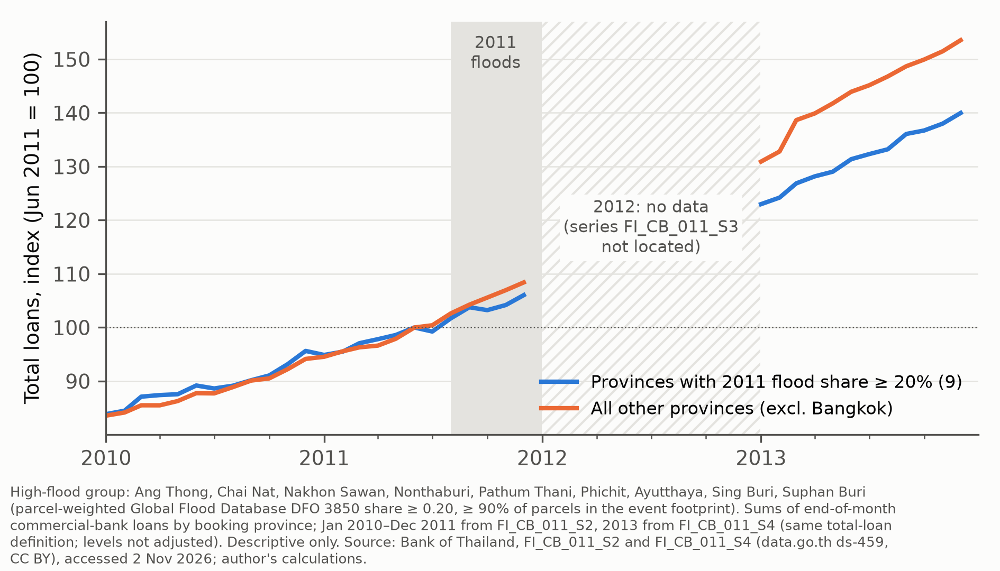
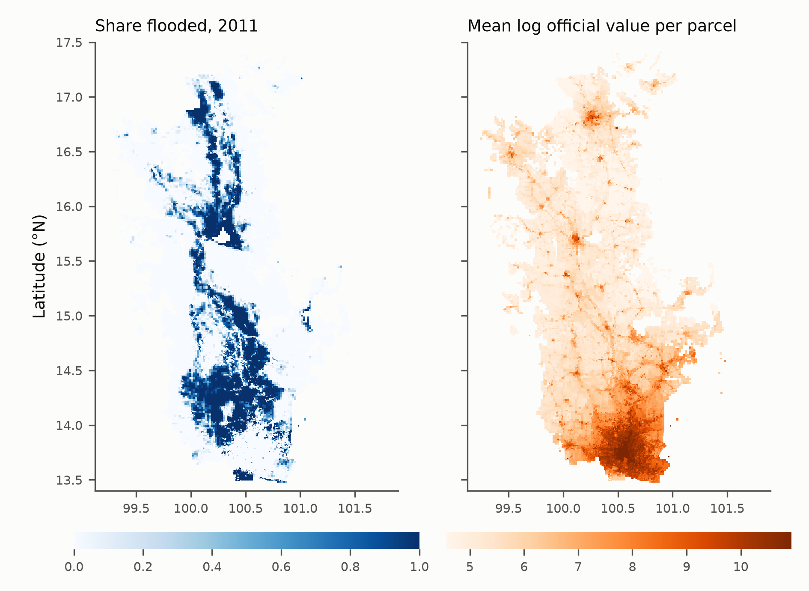
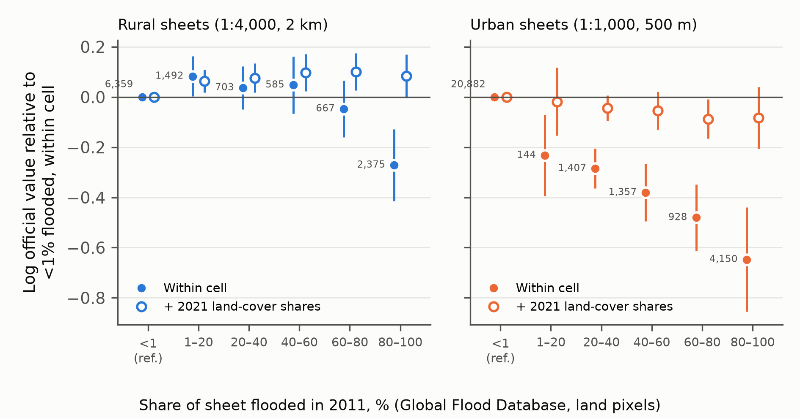

1 Introduction
When a flood covers a piece of land that secures a bank loan, three things can happen to the loan. The borrower may stop paying; the collateral may be worth less if the loan is enforced; and the bank may, or may not, recognise either change in its provisions and capital. The evidence on this chain comes almost entirely from the United States and Western Europe, where flood insurance and public aid pay for much of the damage and where default rises only modestly after a flood (Gallagher and Hartley 2017; Albertazzi et al. 2026). In most emerging markets neither condition holds. Insurance covers a small fraction of flood losses (Swiss Re Institute 2022), and the buffer that stands between a flooded borrower and default is regulatory and fiscal relief: classification freezes, moratoria and subsidised credit. Relief changes not only how large the loss is but when and where it appears in a bank’s accounts.
This paper studies the chain in Thailand. The 2011 Chao Phraya floods caused damage and losses of THB 1.43 trillion, around 90% of it borne by the private sector, while fewer than 1% of private dwellings were insured against natural disasters (World Bank 2012). Floods have recurred since, in the north in 2024 and in the north-central and southern provinces in 2025. The Bank of Thailand’s response in 2011 was a circular that let lenders keep the pre-flood classification of performing borrowers hit by the floods and defer collateral revaluation (Bank of Thailand 2011); since 2024 a standing circular, framed as a request for cooperation, has asked institutions to apply the same template after any declared disaster or alert (Bank of Thailand 2024b). Three features make Thailand a useful laboratory. The insurance channel that dominates the advanced-economy evidence is largely switched off. Relief is rule-based, with eligibility cut-offs that can be used for identification. And the state publishes, as open data, the official value of every titled land parcel, reset in four-year rounds on a calendar that does not depend on floods.
The paper has three parts, which correspond to three questions. Question 1 asks whether the state’s official land values respond to realised floods, and, with an outside estimate of the flood discount, how much of it they capitalise. Question 2 asks whether flood exposure of collateral raises borrower distress and loss given default, and whether under relief the effect surfaces first in restructuring and in IFRS 9 stage 2 rather than in 90-day default. Question 3 asks what flood severity would breach a bank’s capital threshold once observed exposure, valuation behaviour and relief are taken into account: a reverse stress test over a physical hazard variable.
The three questions are at different stages, and the paper says so at every step. It reports one descriptive result, one pre-specified design whose estimate awaits the next valuation round, and tested code for the credit and capital steps. For Question 1 the descriptive result is a cross-section of the 2023–26 valuation round against satellite-measured 2011 inundation across 8.8 million parcels, which I argue does not identify capitalisation; the design is a difference-in-differences comparison of the next valuation round with the current one on sheets flooded in 2024 and 2025, for which the radar flood maps, validation, control selection, balance, power and Monte Carlo evidence are complete and the treatment and control lists are hashed. Registration of the plan is pending; the estimate cannot be produced until the Treasury Department publishes the next round, which as of 4 November 2026 is likely to be delayed by a year to 1 January 2028 (Section 6.6). For Question 2 the loan-level data are restricted, and the paper reports what public aggregates show about credit after 2011, the estimator and the power calculations, with the recovery of planted effects on a synthetic panel left to the appendix. For Question 3 the stress-test machinery is complete and is exercised on the synthetic panel and on an illustrative calibration; its empirical inputs await Questions 1 and 2.
Four things can be stated now. First, in the Chao Phraya basin, official land values on urban cadastral sheets that were almost wholly flooded in 2011 are 48% below values on sheets in the same province and 1:50,000 map block that stayed dry, and the gradient is monotone across flood-share bins. Holding land cover fixed removes most of it: flooded urban sheets are 14% built-up against 36% for dry ones, and the residual urban gap is about 8% and imprecise, with land cover measured ten years after the flood. On rural sheets the raw gradient is weaker and turns positive with controls. Because flood-prone land differs from dry land in use, elevation and amenity, these are not estimates of the flood discount; they show that the official values carry a large amount of flood-correlated variation and that a cross-section cannot tell hazard from land use. Second, Sentinel-1 radar flood maps of the 2024 northern floods classify 198 cadastral sheets in four provinces as treated; against Sentinel-2 optical imagery, 1.3% of the chosen control sheets show flooding and 68.2% of treated sheets do, so if misclassification is unrelated to what the committees know about hazard it attenuates the estimate. Most treated sheets are rice land. Third, with 21 treated 1:50,000 clusters the design has a minimum detectable effect of 0.053 log points at 80% power under the registered weights (standard deviation of value changes 0.10, intra-cluster correlation 0.2), about the size of a fully recognised 4.6% hazard discount (Beltrán et al. 2018); its power against full recognition of that discount is 0.39, against half recognition 0.13, and against realised-damage discounts of 10% or more above 0.96. In 1,000 Monte Carlo replications on synthetic next rounds the wild cluster bootstrap rejects a true null 0.055 of the time, but the placebo-footprint test, which the draft plan made primary, rejects it 0.195 of the time, because shifted footprints land on better-overlapped sheets than the real one and are estimated too precisely; restricting where placebo footprints may land does not repair the test, studentising the comparison does (size 0.055), and the plan is amended before registration to make the bootstrap primary and the placebo check studentised (Section 6.5). A larger 2025 sample has a minimum detectable effect of 0.030. Fourth, in an illustrative stress test, whether valuations price hazard moves the breaking point: at a loan-to-value ratio of 0.8 and a 4.6% discount, moving from valuations that ignore hazard to valuations that price it fully raises the flood severity that breaches capital by 9%, and by 7% at a ratio of 1.0; at lower ratios the effect is larger but depends on the assumed damage share and haircut.
The closest work is as follows. Guo et al. (2026) show that after Hurricane Sandy the assessed market values of inundated New York City homes fell by about 17%, mostly through tax relief, while those of undamaged homes in the high-risk zone did not change even though their sale prices fell, and that statutory assessment caps blunt the pass-through; Question 1 is the emerging-market counterpart of that test, nationwide in coverage and with a satellite-measured treatment, and its design is the paper’s main contribution. Garbarino and Guin (2021) show that after the 2013–14 English floods sale prices fell but lenders’ valuations did not, an upward bias of about 3%; that finding is the mechanism this paper assumes rather than measures, and Van Gerwen et al. (2025) report the opposite behaviour at one Belgian bank after the 2021 floods, which revalued exposed collateral downward. Albertazzi et al. (2026) combine satellite flood perimeters with euro-area credit-register data and find that default on existing loans rises by about 0.6–0.7 percentage points on a base of about 1.4%, a near doubling, with a credit surge that reverses and a rise in loan-to-value ratios on real-estate-backed loans to micro firms; their setting is an advanced economy with partial insurance. Pérez Montes et al. (2025) show that after the 2024 Valencia floods stage 2 shares rose by about half a percentage point and that the most exposed banks moved more loans into stage 2 and fewer into stage 3 while moratoria were in force. Blickle et al. (2025) compute the disaster severity that would fail a single-county US bank, in effect a reverse stress test on a hazard variable, and find banks resilient; Caloia and Jansen (2021) and Caloia et al. (2026) run Dutch banks’ geocoded collateral through fixed flood scenarios and find non-linear capital depletion. Section 8 builds on these by solving the inversion for a scaling of the flood footprint, with relief and valuation behaviour as explicit inputs. In Thailand, Chitchumnong et al. (2025) study one bank’s mortgage book around 2011 and find default below model-predicted levels after the flood, which they attribute to relief, with no geolocation, collateral values or staging; Sawada et al. (2018) find that industrial land prices fell by 6–8% after 2011, while residential and commercial land showed no significant change; and Chongwilaikasaem and Chalermyanont (2023) find a negative effect of flood risk on official valuations and rents in Hat Yai. No study yet traces observed inundation of individual collateral through official and bank valuations to default, restructuring, staging and capital where relief rather than insurance is the buffer. This paper sets out how to do so and takes the first, public-data step; it does not yet trace the chain.
The paper also draws on three wider literatures. On the pricing of hazard in property markets, exposure to sea-level rise carries a discount that grows with buyer sophistication and beliefs (Bernstein et al. 2019; Baldauf et al. 2020), sales volumes fall before prices do (Keys and Mulder 2020), lenders ration uninsurable flood risk through loan-to-value limits (Sastry 2026), and official assessments are less sensitive to neighbourhood attributes than prices are (Avenancio-León and Howard 2022); flood-exposed urban land, moreover, keeps its economic activity after floods (Kocornik-Mina et al. 2020). On debt relief, waivers and moratoria reallocate credit, change later repayment and can conceal weak loans (Giné and Kanz 2018; Mukherjee et al. 2018; Dinerstein et al. 2024; Kim et al. 2024; Chari et al. 2021), which is why Question 2 treats relief as a censoring process rather than a transfer. On flood stress tests, capital effects are non-linear in damage and sensitive to defences and to collateral modelling (Lepore and Mok 2024; Dhima et al. 2026), and in Thailand the systemic-risk evidence so far concerns transition risk, with physical risk flagged as the open question (Luangaram et al. 2024); household evidence from 2011 finds income losses with small effects on debt (Noy et al. 2021).
One framing point governs the interpretation throughout. The official values studied in Question 1 are the state’s base for transfer fees and taxes, set by provincial committees by market comparison; they are not banks’ collateral values, and no public Bank of Thailand rule links the two (Ministry of Finance (Thailand) 2020; Bank of Thailand 2019). Question 1 therefore measures the first-round response of the official valuer, and its relation to the bank parameter of Section 3 is a stated assumption that loan-level appraisal data would test.
Section 2 sets out the institutions. Section 3 gives the framework and its testable predictions. Section 4 describes the data. Section 5 reports the 2011 cross-section. Section 6 reports the pre-specified design for Question 1 and its validation, power, timing and status. Section 7 covers Question 2. Section 8 covers Question 3. Section 9 discusses what can and cannot yet be concluded, and Section 10 concludes. Appendices A to E hold the supporting tables, the code tests on synthetic data and the timing cases.
2 Institutional background
This section gives the institutional facts the design depends on. All of them come from public documents opened on the dates recorded in the replication files; the Thai titles are kept in the bibliography with English translations.
2.1 The 2011 floods, insurance and relief
The 2011 Chao Phraya floods ran from late July 2011 to January 2012 and inundated the central plain, including seven industrial estates in Ayutthaya and Pathum Thani (Komori et al. 2012; Haraguchi and Lall 2013). The joint World Bank and Royal Thai Government assessment put damage and losses at THB 1.43 trillion, around 70% in manufacturing and around 90% borne by the private sector, and estimated that fewer than 1% of private dwellings were insured against natural disasters (World Bank 2012). Bank balance sheets were resilient on impact; the assessment expected non-performing loans to rise by about 0.5% after the grace periods and restructurings that the central bank allowed.
Those grace periods are the relief rules that matter here. On 19 October 2011 the Bank of Thailand issued circular ว. 1564/2554, which let financial institutions keep the pre-flood classification of debtors who were Normal or Special Mention when the floods hit, in disaster areas declared by the Department of Disaster Prevention and Mitigation and, for indirectly affected debtors, outside them. Assisted loans were treated as general rather than troubled debt restructurings and were not reported as restructured; the attached questions and answers keep the three-month rule for upgrading Special Mention debtors, let accrual income continue, and allow collateral revaluations that fell due by 30 June 2012 to be deferred by up to a year, to 31 December 2012 at the latest (Bank of Thailand 2011). An Emergency Decree of 26 January 2012 created a THB 300 billion soft-loan facility operated by the central bank, lending to institutions at 0.01% with on-lending to flood-affected borrowers capped at 3% (Kingdom of Thailand 2012), and a second decree created a disaster insurance promotion fund (พงศ์ปิยะไพบูลย์ 2012). A three-year moratorium at state-owned specialised financial institutions, approved by the Cabinet on 15 November 2011 for borrowers whose total principal was at most THB 500,000 on 30 June 2011, is often described as flood relief; the press report of the resolution shows it was conditioned on pre-flood debt status, not on flooding, and I do not use it as a flood instrument (MGR Online 2011).1
The 2011 template became a standing arrangement in 2024. Since 30 August 2024 circular ว. 601/2567, framed as a request for cooperation, has let lenders keep the pre-disaster classification of assisted debtors who are not yet credit-impaired, for up to twelve months from a disaster-zone declaration or from a yellow, orange or red disaster-alert level (Bank of Thailand 2024b, 2024a). After the 2025 floods, circular ว. 8158/2568 of 15 December 2025 added, for Level-4 (“extremely severe”) zones, a principal moratorium and interest waiver of up to twelve months for retail and SME debtors who were not non-performing on 2 December 2025, with opt-in by 31 January 2026; days past due may be held at the pre-disaster count, home-repair loans are excluded from the loan-to-value calculation and risk-weighted at 35% (Bank of Thailand 2025b). Three features of these rules recur in the identification strategy of Section 7: eligibility turns on pre-flood classification status; the relief window is keyed to the date and place of an administrative declaration rather than to flooding; and the rules freeze the observed default of eligible borrowers for a known period.
2.2 Official land values
The Treasury Department sets an official value for every titled land parcel under the Property Valuation for State Benefit Act B.E. 2562 (2019) (Kingdom of Thailand 2019). Values are set in rounds of four years, published at least thirty days before they take effect, and a round may be extended by one year (s. 19). The method is laid down in a 2020 Ministerial Regulation: provincial committees value land by market comparison from registered transactions and other market evidence, assign a value per square wah to each land unit, and adjust for depth and shape by fixed factors, with values rounded to the schedule (Ministry of Finance (Thailand) 2020). The regulation contains no flood or hazard rule; its one explicit trigger for a within-round revision is a divergence of 15% or more between official and market values (ข้อ 9). The values are the base for the 2% transfer fee and for other fees and taxes collected at registration (Department of Lands (Thailand) 2026). The current round covers 1 January 2023 to 31 December 2026; the parcel-level schedule is published as open data (กรมธนารักษ์ (Treasury Department) 2026e).
Two points follow. Because the method is market comparison, the official values should capitalise whatever registered transaction prices capitalise, with a lag set by the round calendar and by the committees’ sampling of comparables. The one direct piece of evidence on how the Department responds to a flood points to a lag of at least a round: after the 2011 floods it postponed the new schedule by six months, reported that its survey found no fall in prices in flooded areas, and brought the schedule compiled in late 2011 into force unchanged, with an average rise of 21.34% (MGR Online 2012). And because the calendar is fixed in advance, floods that occur between rounds, such as the 2024 northern and 2025 floods, create a difference-in-differences design: parcels flooded between two rounds against nearby unflooded parcels, with the value change between rounds as the outcome.
2.3 Bank collateral values, classification and capital
The Bank of Thailand’s collateral policy of 8 May 2019 governs the values that institutions use in provisioning (Bank of Thailand 2019). Credit-impaired (stage 3) real-estate collateral must be revalued at least every three years; for performing and under-performing collateral the frequency is at the institution’s discretion, and automated valuation models are allowed subject to validation. Methods follow the valuation standards endorsed by the securities regulator. The policy makes no reference to the Treasury Department’s official values; a full-text search of the document found none. The link between official values and bank collateral values is therefore not a rule but, at most, a shared reliance on the same transaction evidence; Section 3 treats it as an assumption.
Classification and provisioning moved to the three TFRS 9 stages, performing, under-performing and credit-impaired, for financial statements beginning on or after 1 January 2020 (Bank of Thailand 2018). The 2011 floods therefore happened under the earlier five-class system, and the 2024–25 floods under expected-credit-loss staging with a classification freeze. Capital thresholds are a 4.5% common equity tier 1 minimum plus a 2.5% conservation buffer (Bank of Thailand 2012), with a further 1% for domestic systemically important banks (Bank of Thailand 2017); these give the 7% and 8% thresholds used in Section 8.
2.4 Climate supervision
The Bank of Thailand’s Standard Practice of 15 February 2023 asks financial institutions to integrate environmental and climate considerations into their business; flood is named as an acute physical risk, scenario analysis appears as an example of forward-looking assessment without a prescribed scenario, and incorporating environmental risk into collateral valuation is given as an example control for high-risk customers (Bank of Thailand 2023). A pilot climate stress test with systemically important and other ready banks, “starting with physical risk”, is listed under the central bank’s 2024 progress without published scenarios or results (Bank of Thailand 2025a). A World Bank background note for Thailand’s Country Climate and Development Report, prepared with the central bank, maps corporate lending by district flood risk and finds 41% of the sample banks’ corporate lending in districts with high riverine flood risk and 7% in very-high-risk districts, with a 2011-type flood treated as a 1-in-50-year event (World Bank 2026; Dolk et al. 2025). These documents set the supervisory template that Section 8 formalises: hazard footprint, collateral damage, loan-to-value, loss given default, capital.
3 Framework
The framework is deliberately simple. Its purpose is to fix notation, to make explicit which parameter each question estimates, and to derive the predictions that the empirical sections test or prepare to test.
3.1 Values, loan-to-value and the two capitalisation parameters
Let parcel carry flood hazard , measured ex ante as an exceedance probability or ex post as the share of the parcel inundated in a given event. The full-information market value is (1) where is the value of an otherwise identical dry parcel and is the full-information flood discount. A valuer of type records (2) where is the share of the discount the valuer captures. is the Treasury Department’s official value and a bank’s collateral value. Question 1 estimates : the response of official values to flood hazard and to realised floods. is observable only with loan-level appraisal data. Equation (2) has no term for realised damage. A valuation round that follows a flood can respond to the damage itself, to administrative relief of the tax base, and to newly recognised hazard; Section 6 states which of these its estimate combines and how the timing of the round’s survey separates them.
For a loan with exposure secured on parcel , the reported loan-to-value ratio is and the true ratio is . Whenever and , : the bank’s books understate leverage on flood-exposed collateral. The understatement is largest where hazard is highest and where the valuer is least responsive.
3.2 Default, relief and loss given default
Borrower default probability depends on the realised flood intensity at the collateral, on hazard, on true leverage and on covariates: (3) Relief censors what is observed. If a share of eligible borrowers’ default is suppressed during the relief window and is an eligibility indicator (pre-flood performing status in a declared zone), observed default is (4) so the measured flood effect on default among eligible borrowers is a lower bound on , and the gap between eligible and ineligible borrowers in flooded areas measures the censoring. The same relief rules move distress into restructuring flags and, under IFRS 9, into stage 2 (a significant increase in credit risk without impairment), which are not censored in the same way.
Loss given default follows the supervisory template. With a recovery haircut and a post-flood collateral value , where is the damage share, (5) Equation (5) is kinked: loss given default is zero while collateral cover exceeds and rises linearly afterwards. The kink is what makes matter. A bank whose valuations ignore hazard () believes it is further from the kink than it is; the flood pushes more loans across the kink than its models predict.
3.3 Capital and the breaking point
Aggregate exposures into regions with portfolio weights , flood exposure (the exposure-weighted share of collateral flooded in a reference event), hazard and book leverage . A scenario of severity scales the reference footprint, , so that reproduces the reference event. Expected loss is , the common equity ratio is (6) and the breaking point is (7) with for an ordinary bank and for a domestic systemically important bank. is found by bisection after checking that is monotone, which it is whenever and are non-decreasing in . Risk-weighted assets are held fixed in the baseline so that isolates the loss channel; letting them rise with flood exposure lowers further.
3.4 Predictions
The framework yields six predictions. P1–P2 concern Question 1, P3–P4 Question 2 and P5–P6 Question 3.
: official values respond to flood hazard, but less than fully.
The response to a realised flood is partial and lagged: it appears in the first round after the flood, and the within-round revision trigger (a 15% divergence) is rarely hit by a flood alone.
, and under relief the flood effect appears in restructuring and stage 2 before, or instead of, 90-day default; the eligible–ineligible gap in default measures the censoring.
, and the effect is larger the lower is , because low places more loans near the kink.
and : geographic concentration and unpriced hazard both bring the breaking point closer.
Relief raises the measured short-run by censoring default inside the window, but not the lifetime ; the gap between the two is the policy’s intertemporal transfer.
The paper tests none of P3–P4 with loan-level data yet; Section 7 shows that the estimator recovers them on a synthetic panel in which they hold by construction, and Section 8 illustrates the part of P5 under an illustrative calibration, leaving the concentration part unexamined.
4 Data
Every dataset is public. Table 1 lists them; access dates, licences and the download and cleaning scripts are in the replication repository.
| Dataset | Publisher and content | Use |
|---|---|---|
| Official land values, round 2023–26 | Treasury Department open data; one row per titled parcel with cadastral sheet reference, land-unit code and value per sq. wah (กรมธนารักษ์ (Treasury Department) 2026e) | Outcome for Question 1; parcels aggregated to cadastral sheets |
| Global Flood Database, event DFO 3850 | Cloud to Street and Dartmouth Flood Observatory, MODIS 250 m, 5 August 2011 to 9 January 2012 (Tellman et al. 2021; Cloud to Street and Dartmouth Flood Observatory 2021) | 2011 flood share by sheet (Section 5) |
| Global Surface Water, occurrence | EC JRC and Google, Landsat 30 m, 1984–2021 (Pekel et al. 2016; EC JRC and Google 2022) | Permanent water, distance to water, masking |
| Sentinel-1 GRD | Copernicus, C-band radar, 10 m (European Union/ESA/Copernicus 2014) | 2024 and 2025 flood maps by sheet; treatment for Question 1 |
| Sentinel-2 L2A | Copernicus optical, 10 m | Validation of radar maps (Section 6.2) |
| UNOSAT flood extents, 2024 | UN Satellite Centre, event-specific analyses | Independent treatment definition; second sample |
| Copernicus DEM GLO-30 and GLO-90 | ESA and Airbus (European Space Agency and Airbus 2022); FABDEM (Hawker et al. 2022) for checks | Elevation and height above valley floor |
| ESA WorldCover 2021 | 10 m land cover (Zanaga et al. 2022) | Built-up, cropland, tree and water shares by sheet |
| Commercial-bank loans by province | Bank of Thailand statistics, monthly from July 2005 (2012 missing) (Bank of Thailand 2026) | Descriptive credit evidence; portfolio weights for Question 3 |
| Residential property price index by region | Bank of Thailand, appraisal-based (Bank of Thailand, Residential Property Price Index team 2025; Samritpiam and Chongprasoplarp 2026) | Descriptive price windows around floods |
| Loan-level panel with collateral location | Restricted; schema and synthetic panel only | Question 2 estimator and power; Question 3 inversion |
4.1 From parcels to cadastral sheets
The Treasury schedule gives, for each parcel, a value per square wah and a cadastral sheet reference (a UTM map series, sheet number and scale) but no coordinates. Parcel geometry is not public. The sheet reference can, however, be decoded into a rectangle: the national cadastral grid nests sheets at scales 1:4,000 (2 km squares, used in rural areas), 1:2,000, 1:1,000 (500 m squares, urban) and 1:500 inside 1:50,000 blocks. I decode every reference and locate each parcel to its sheet rectangle. Across 77 provinces the schedule contains 37,806,594 parcels on 317,081 distinct sheet references; 95.8% of parcels are located, 74.9% fall inside the Global Flood Database footprint for 2011, and 81.8% have Global Surface Water coverage.
The unit of analysis throughout is therefore the cadastral sheet, not the parcel. Three consequences follow. First, treatment is measured as the share of a sheet’s land pixels flooded, so a sheet is a continuous rather than a binary exposure. Second, values within a sheet are coarse: the committees assign one value per land unit, and a 1:1,000 sheet with a median of 38 parcels has a median of only 5 distinct values, a 1:4,000 sheet with 196 parcels a median of 11 (Appendix Table 15). The sheet mean of log value is the outcome, and the parcel count is not a sample size. Third, at 1:1,000 a sheet is only a few MODIS pixels: 72.3% of urban sheets in the 2011 pilot have a flood share of exactly zero, 14.1% are entirely flooded and only 13.5% take interior values, with a median of 4 land pixels per sheet; rural sheets have a median of 64 pixels and 36.8% interior values. The urban measure is close to binary and the rural measure is continuous.
4.2 Flood maps
For 2011 the only satellite record at scale is the Global Flood Database, built from MODIS optical imagery at 250 m, which the authors validate at about 83% accuracy against Landsat and which is known to miss flooding under cloud, in dense vegetation and in built-up areas (Tellman et al. 2021). The near-absence of detected flooding in Bangkok, where the 2011 flood is well documented, is the urban under-detection at work, not an absence of flooding; the 2011 flood share of Bangkok’s parcels in the database is 2.5% against 64.6% in Ayutthaya (Appendix Table 16). I treat the 2011 share as a descriptive exposure measure and do not use it for identification.
For 2024 and 2025 I build sheet-level flood maps from Sentinel-1 radar, which sees through cloud, with a rule fixed before any outcome was examined. Each VV scene is calibrated to on a 0.001 grid (about 110 m), and a pixel is water if dB. A pixel is flooded in an event season (15 August to 31 October 2024 for the northern floods; 15 November to 31 December 2025 for the floods in the south) if it is water in at least one scene of that season, water in no scene of the same calendar window in 2023, and observed in at least two 2023 scenes; the reference rule removes permanent water, radar shadow and paddy that floods every year. The sheet’s flood share is the flooded fraction of its valid pixels. Radar is insensitive to flooding under vegetation and in built-up areas, where double-bounce scattering hides water; the Copernicus Global Flood Monitoring product excludes such areas and states that this leads more often to under-estimation (Expert Flood Monitoring Alliance 2025). Section 6.2 quantifies the resulting errors with optical imagery and with UNOSAT’s independent extents.
4.3 Credit and price aggregates
The Bank of Thailand publishes monthly loans and deposits of commercial banks by province; the files located run from July 2005, with 2012 missing (Bank of Thailand 2026). These give the descriptive evidence of Section 7 and the portfolio weights for the illustrative stress test; Bangkok alone accounts for 75.5% of commercial-bank loans at December 2025, and loans are recorded by booking province, so corporate loans sit at head offices rather than at their collateral. The appraisal-based residential property price index by region is used only to show the price path around the three floods; it is a regional index built from lenders’ appraisal data in the mortgage-collateral database and is not a measure of official values (Bank of Thailand, Residential Property Price Index team 2025; Samritpiam and Chongprasoplarp 2026).
5 Official values and the 2011 flood: a cross-section
This section asks a descriptive question: about ten years after the 2011 flood (the 2023–26 values rest on evidence from about 2021–22), how do the official values vary with the share of a cadastral sheet that was inundated? The answer motivates the design of Section 6 and supplies its power inputs. It is not an estimate of capitalisation, and I give the reasons at the end.
The sample is the core Chao Phraya basin: seventeen provinces from Bangkok north to Phitsanulok and Kamphaeng Phet, restricted to decoded sheets at the two scales that carry most parcels, 1:4,000 (rural) and 1:1,000 (urban). It contains 41,049 sheets with 2011 flood data and 8,775,877 parcels; a further 458 sheets have no flood pixel and are excluded. Appendix Figure 2 maps the 2011 flood share and the mean log official value by sheet. The specification compares sheets within a cell defined by province, 1:50,000 map block and scale, so that each flooded sheet is compared with dry sheets a few kilometres away at the same cadastral scale: (8) where is the parcel-weighted mean of log value per square wah on sheet , the 2011 flood share, one of five bins above the reference bin of less than 1%, a cell effect, and optionally the sheet’s 2021 built-up, cropland, tree and water shares. Sheets are weighted equally, as in the registered design, and standard errors are clustered by 1:50,000 block.
| Rural sheets (1:4,000) | Urban sheets (1:1,000) | |||
| 2011 flood share | (1) | (2) | (3) | (4) |
| 1% | 0 (ref.) | 0 (ref.) | 0 (ref.) | 0 (ref.) |
| 1–20% | 0.083 (0.040) | 0.063 (0.023) | 0.232 (0.080) | 0.019 (0.068) |
| 20–40% | 0.037 (0.043) | 0.076 (0.029) | 0.285 (0.039) | 0.044 (0.025) |
| 40–60% | 0.048 (0.057) | 0.097 (0.037) | 0.381 (0.057) | 0.054 (0.038) |
| 60–80% | 0.047 (0.056) | 0.100 (0.037) | 0.480 (0.066) | 0.087 (0.039) |
| 80–100% | 0.271 (0.071) | 0.083 (0.043) | 0.647 (0.104) | 0.083 (0.061) |
| Sheets | 12,181 | 28,868 | ||
| Land-cover controls | no | yes | no | yes |
Notes: Dependent variable: parcel-weighted mean log official value per sq. wah on the sheet, round 2023–26. Cell effects (province 1:50,000 block scale) in all columns; columns (2) and (4) add 2021 built-up, cropland, tree and water shares. Sheets weighted equally. Standard errors clustered by 1:50,000 block (108 rural, 95 urban) in parentheses. Appendix Figure 3 plots the coefficients and Appendix Table 14 gives linear slopes. Source: appraisal_flood_binned.csv.
Table 2 gives the main pattern. On urban sheets the raw gradient is monotone and large: sheets flooded 80–100% in 2011 have mean log values 0.647 (0.104) below the reference, about 48% lower, and even sheets flooded 1–20% are 0.232 (0.080) lower. Adding land-cover shares removes most of it: the top-bin coefficient falls to 0.083 (0.061), and no bin is more than nine log points below the reference; the residual urban gap is about 8% and imprecise, which is as large as the hazard discounts the literature reports (Section 6.6), not negligible. The reason for the fall is in Appendix Table 17: urban sheets that stayed dry in 2011 are 36% built-up and 23% cropland, while those almost wholly flooded are 14% built-up and 48% cropland. The sheets that the optical satellite saw flooded are, to a large extent, the open land at the edge of towns; the dense centres were under water too but are not in the flooded bins. On rural sheets the raw gradient is weaker and non-monotone: only the top bin is lower, at 0.271 (0.071), and with land-cover controls every bin is positive, between 0.063 and 0.083.
Four reasons stop me from reading the cross-section as capitalisation. First, flood-prone land differs from dry land in ways the committees value directly: it is lower, closer to rivers, more often cropland, and farther from roads and town centres. Second, the land-cover control is measured in 2021, ten years after the flood. If the flood itself changed land use, through abandonment, conversion or rebuilding, then land cover is an outcome and a bad control, and the fall from 48% to about 8% cannot be read as “mostly land use”; a pre-2011 land-cover product would be needed to separate the two, and none is in the replication files yet. Third, the 2011 flood share is measured with error that is correlated with the outcome: the optical satellite under-detects flooding in built-up areas, which are exactly the high-value sheets, and an urban sheet rests on a median of 4 pixels, so the urban measure is close to binary and noisy. Fourth, there is no pre-flood round in the public data against which to difference, so the cross-section cannot separate what the committees valued before 2011 from what they revised after it.
What the cross-section does establish is useful for the design that follows. The official values carry large flood-correlated variation, so there is something to explain. The within-cell comparison is feasible at scale, the clustering structure is known, and the standard deviation of sheet-level log values within cells sets the scale for the power calculations of Section 6. And the land-cover result is a warning that any flood-exposure measure built from satellites must be balanced on land cover and elevation before treated and control sheets are compared.
6 Do official values respond to a flood? A pre-specified design
The identifying variation for Question 1 is the fixed calendar of valuation rounds. The 2023–26 round was set before the 2024 northern floods and the 2025 floods. The first round published after those floods will reveal whether the committees revised the values of flooded parcels relative to nearby unflooded ones. This section describes the design, the flood maps and their validation, the samples, the balance and power evidence, and the Monte Carlo and synthetic checks. The design is written down in a pre-analysis plan with the treatment and control lists hashed; registration on OSF is pending and is to precede the announcement of the next round, so the design is pre-specified but not yet pre-registered. The primary estimate does not exist yet; Section 6.6 explains why and when. The plan carries the registration detail (fallback orders, file names, hash rules, stopping rules); this section keeps what a reader needs to judge identification.
6.1 Treatment, controls and estimator
The unit is the cadastral sheet. The outcome is the change in the sheet’s mean log value per square wah between the 2023–26 round and the next round, computed over land units that exist in both rounds (“pseudo land units”), so that re-zoning does not enter the outcome. A sheet is treated if more than 25% of its land pixels were flooded in the 2024 radar maps and at most 25% in 2025, so that the treated sheets are those flooded once, in the event under study. Controls are sheets within 5 km of a treated sheet, in the same province, with less than 1% flooded in every source (2024 radar, 2025 radar, UNOSAT, and Sentinel-2 optical), and with height above the valley floor no greater than the 90th percentile of treated sheets, so that controls lie in the same floodplain rather than on the surrounding hills. Provinces enter the primary sample if they have at least 25 treated sheets. Four provinces qualify in 2024: Chiang Rai (88 treated), Nong Khai (60), Nakhon Phanom (25) and Phayao (25), giving 198 treated and 1,891 control sheets in 57 1:50,000 clusters, 21 of which contain treated sheets (Appendix Table 18). A second 2024 sample defines treatment from UNOSAT’s flood extents instead, with the same 25% threshold on the share of land pixels inside the extent, and a 2025 sample applies the radar rule to the 2025 floods on sheets that were dry in 2024 (Section 6.4).
Within each province, controls are re-weighted by entropy balancing to match the treated sheets’ means of the 2023–26 log value, height above valley floor, built-up share, cropland share and a rural indicator; if the full set cannot be balanced the worst-fitting variable is dropped until every standardised gap is at most 0.01. The estimator is weighted least squares of the value change on the treatment indicator with province fixed effects, elevation, distance to permanent water, land-cover shares and the rural indicator as covariates. Inference is by randomisation: 1,000 placebo flood footprints are drawn by shifting the real 2024 footprint within the province and re-selecting treated and control sheets, and the primary -value is the share of placebo estimates at least as large in absolute value as the actual one. A wild cluster bootstrap (Rademacher weights, 9,999 draws, restricted, CR1 -statistic, clusters at the 1:50,000 block) is the check, and is primary for the UNOSAT sample, whose footprint cannot be shifted in the same way. The two 2024 samples form one Holm family; the 2025 sample is a separate family. The pre-specified decision rule is a negative coefficient with a Holm-adjusted in at least one 2024 sample. Secondary analyses are the interaction of treatment with height above valley floor, a descriptive carry-over share (the share of treated sheets whose land units are re-drawn between rounds, with Lee bounds on the moved-unit change), and the sensitivities of Appendix B.
The coefficient is a reduced-form quantity: the response of official values, in the first round after the event, to a realised flood. Equation (2) has no term for realised damage, so that response combines physical damage, any updating of the hazard the committees attach to the land, administrative or relief-driven revision, and changes in the comparables the committees use. Reading it as requires an outside value of the discount , which Thailand’s lack of public transaction prices does not supply; Section 6.6 returns to what the estimate can and cannot say about .
6.2 Validating the radar maps
Radar flood maps can err in two ways that matter for the design: they can miss flooded sheets, which then enter the control group and attenuate the estimate, and they can flag dry sheets as flooded, which dilutes the treated group. I measure both against Sentinel-2 optical imagery, which is independent of the radar and accurate where cloud permits. For each sheet and each scene with at least half its pixels clear, the water share is the fraction of clear pixels classified as water in the scene classification layer; “new water” is the largest 2024 water share minus the largest 2023 water share over the same window, and a sheet is optically flooded if new water exceeds 10%, a lower bar than the radar’s 25% because clear optical scenes are rare and cloud hides the flood peak. Optical water classification misses water under vegetation and among buildings, so for treated sheets the optical rate is a lower bound on precision.
| Controls | Treated | ||||
| Province | Sheets | Optically flooded (%) | Sheets | Optically flooded (%) | Median new-water share (%) |
| Chiang Rai | 495 | 0.6 | 88 | 56.8 | 14.3 |
| Nakhon Phanom | 981 | 0.3 | 25 | 88.0 | 31.1 |
| Nong Khai | 333 | 5.4 | 60 | 78.3 | 46.5 |
| Phayao | 82 | 0.0 | 25 | 64.0 | 28.2 |
| Pooled | 1,891 | 1.3 | 198 | 68.2 | 24.6 |
Notes: A sheet is “optically flooded” if Sentinel-2 shows new open water on it in the flood period. Treated sheets: more than 25% flooded in the Sentinel-1 radar map; controls: less than 1% flooded in every source, within 5 km of a treated sheet, height-capped. The median new-water share is over treated sheets. Source: s1_s2_validation.csv.
Table 3 gives the result. Of 1,891 control sheets, 1.3% (24 sheets) show optical flooding, 18 of them in Nong Khai (5.4% of its controls) and the rest in Chiang Rai and Nakhon Phanom; in Phayao none does. Of 198 treated sheets, 68.2% show optical flooding, with a median new-water share of 24.6%; precision ranges from 56.8% in Chiang Rai to 88.0% in Nakhon Phanom. The treated group therefore contains some sheets that the optical sensor did not see flooded, a mixture of genuine radar false positives and optical misses under cloud and vegetation. If this misclassification is unrelated to what the committees know about the land, it attenuates the estimate towards zero and does not create a spurious effect. The qualification matters: if the false positives are seasonally wet paddy whose hazard the committees already price, the error is not benign, which is why the treated sheets’ land cover and the reference-season rule are examined below.
An independent check uses UNOSAT’s event analyses of the 2024 floods, which cover Chiang Rai and Phayao. On the 7,900 sheets in their extent, UNOSAT flags 1,214 sheets as flooded and the radar maps 114, with 90 in common: precision of the radar classification against UNOSAT is 0.79 but recall only 0.07, agreement 0.85 and Cohen’s kappa 0.11, with a correlation of 0.35 between the two flood shares. The radar maps, built from a few scenes per orbit, see a small subset of what UNOSAT’s multi-date analysis sees. This is why the design carries a second 2024 sample in which UNOSAT defines treatment, and why the radar sample’s controls are required to be dry in every source including UNOSAT.
6.2.0.1 What the treated sheets are.
The radar rule counts a pixel as flooded only if it was water in no 2023 scene of the same window, which is meant to remove paddy that floods every year. A single reference season cannot do so where 2023 happened to be dry, and the variant that also screens out water seen in 2021 and 2022 removes 36 of the 198 treated sheets (18%; Appendix Table 23), which is direct evidence that the single-season rule admits some recurrent water. Table 4 shows what the treated sheets are: cropland is the largest 2021 land-cover class on 171 of the 198 treated sheets and exceeds half the sheet on 158; built-up land is the largest class on 4 and exceeds a fifth of the sheet on 10. The treated units are, overwhelmingly, northern and north-eastern rice land. Two consequences follow. The design’s external validity for bank collateral, which is largely residential and urban, is limited, and the chain from to in Section 8 runs through a population that this sample cannot speak to directly. And the cropland-excluded variant keeps only 32 treated sheets in 10 clusters, so no separate power claim is made for built-up sheets. Whether the multi-year reference period should become the primary treatment definition is a decision to be taken before registration; the plan currently keeps the single-season rule as primary and the 2021–23 rule as a registered sensitivity.
| Treated sheets | Controls | |||
| WorldCover 2021 class | Largest share | Share above 50% | Mean share (%) | Mean share (%) |
| Built-up | 4 | 4 | 4.5 | 14.0 |
| Cropland | 171 | 158 | 65.8 | 53.0 |
| Tree cover | 16 | 8 | 19.3 | 27.2 |
| Permanent water | 7 | 3 | 5.1 | 1.4 |
Notes: WorldCover 2021 shares of each sheet’s 10 m pixels. “Largest share”: number of treated sheets on which the class has the largest share of the four; “share above 50%”: number on which the class covers more than half the sheet. Controls: the 1,891 primary controls, unweighted. Source: rq1_2024_sample_sheets.csv.gz.
6.3 Balance and power
| Standardised mean difference, treated minus controls | ||
| Covariate | Unweighted | Registered weights |
| Log value per sq. wah, 2023–26 | 0.41 | 0.08 |
| Height above valley floor (m) | 0.15 | 0.32 |
| Built-up share | 0.68 | 0.00 |
| Cropland share | 0.52 | 0.13 |
| Tree-cover share | 0.48 | 0.38 |
| Permanent-water share | 0.42 | 0.67 |
| Effective number of controls | 1,891 | 98.0 |
| MDE (SD 0.10, ICC 0.2) | 0.047 | 0.053 |
Notes: Standardised mean differences (treated minus controls, divided by the pooled standard deviation) before weighting and after entropy balancing with the registered weights (within province, on log value, height, built-up and cropland shares and the rural indicator, with the fallback order of the plan; pooled row of Appendix Table 19). Tree and water shares are not balanced on and are reported as a check. The effective number of controls is the Kish effective sample size of the weights. MDE: minimum detectable effect at 80% power and 5% size, two-sided, for a standard deviation of value changes of 0.10 and intra-cluster correlation 0.2, with critical values on the number of clusters minus one. Sources: rq1_2024_pooled_balance.csv (unweighted), rq1_round_change_balance.csv (registered weights), rq1_2024_pooled_mde.csv.
Flooded sheets are not a random sample of the floodplain. Before weighting, treated sheets have lower values (standardised difference 0.41), less built-up land (0.68) and more cropland (0.52) than controls that are already restricted to the same floodplain (Table 5). Under the registered weights the pooled gaps on the balancing variables fall to 0.08 on value, 0.32 on height, 0.00 on built-up share and 0.13 on cropland, and the tree-cover and water shares, which are not balanced on, stand at 0.38 and 0.67. The gaps are small but not zero, because balancing is done province by province and the pooled gap aggregates provinces with different fallbacks. The price is a loss of effective sample: the 1,891 controls carry the weight of 98.0 after balancing. Appendix Table 19 gives the province detail, and it is uneven. In Phayao, 25 treated sheets against 82 controls leave 13.2 effective controls, the registered fallback keeps only the built-up share and the rural indicator, and the remaining gaps are 0.98 standard deviations on value, 0.64 on height, 1.08 on cropland, 1.39 on tree cover and 9.6 on water. In Nakhon Phanom 981 controls shrink to 8.5 effective controls. Gaps of this size mean that Phayao’s treated sheets lie partly outside the support of its controls, so the province contributes extrapolation rather than comparison. Two responses are added to the plan before registration: a sensitivity that trims treated and control sheets to common support on height and water share, and province-by-province estimates with their effective sample sizes reported beside the pooled one. Whether Phayao stays in the primary sample under an overlap rule is a decision to be fixed in the plan before any round is published, not after.
Power is computed from the cluster structure rather than from the sheet count. With clusters and treated share and control share of the weights in cluster , the variance of the difference in means is and the minimum detectable effect is times its square root. With and the registered primary sample has a minimum detectable effect of 0.053 log points after weighting (0.047 unweighted); the unweighted figure is 0.030 at and 0.070 at , and 0.094 if value changes are twice as dispersed. The equivalence margin that the unweighted design could rule out at 80% power is 0.049. For the carry-over share the minimum detectable difference is 23.5 percentage points. The scale of is uncertain because no earlier public round exists; the plan treats 0.10 as the central case and 0.20 as the pessimistic one.
| Sheet effect | Power at the registered MDE | ||||
| Radar 2024 | UNOSAT 2024 | Radar 2025 | |||
| 2.3 | 0.25 | 0.004 | 0.05 | 0.05 | 0.07 |
| 2.3 | 0.50 | 0.008 | 0.07 | 0.06 | 0.11 |
| 2.3 | 1.00 | 0.016 | 0.13 | 0.11 | 0.32 |
| 4.6 | 0.25 | 0.008 | 0.07 | 0.06 | 0.11 |
| 4.6 | 0.50 | 0.016 | 0.13 | 0.11 | 0.32 |
| 4.6 | 1.00 | 0.032 | 0.39 | 0.30 | 0.85 |
| 9.2 | 0.25 | 0.016 | 0.13 | 0.11 | 0.32 |
| 9.2 | 0.50 | 0.032 | 0.39 | 0.30 | 0.85 |
| 9.2 | 1.00 | 0.064 | 0.92 | 0.84 | 1.00 |
| Damage 10% | – | 0.070 | 0.96 | 0.89 | 1.00 |
| Damage 20% | – | 0.140 | 1.00 | 1.00 | 1.00 |
Notes: Sheet effect: , the first-round fall in the sheet mean when the committees capture a share of a full-information discount (in per cent) and 30% of land units carry their value over unchanged, as in the synthetic rounds of Table 8. “Damage” rows: a realised-damage discount of 10% or 20%, fully passed through. Power: two-sided test at 5% from the registered weighted MDE of each sample (Table 7), inverting . Source: rq1_round_change_balance.csv, rq1_round_change_unosat_balance.csv, rq1_round_change_2025_balance.csv; author’s calculations.
What a minimum detectable effect of 0.053 means for the framework’s parameters is shown in Table 6. With , the inland-floodplain discount of Beltrán et al. (2018), full recognition () implies a sheet effect of 0.032 once 30% of units carry over, and the primary sample’s power against it is 0.39; against half recognition (0.016) it is 0.13. Power is adequate only for a discount twice that size (0.92 at ) or for realised-damage discounts of the size reported after Hurricane Sandy (0.96 at 10%, 1.00 at 20%; (Ortega and Taşpınar 2018; Guo et al. 2026)). The 2025 sample does better (0.85 against full recognition of 4.6%, 0.32 against half), which is one reason the plan registers a stacked 2024-plus-2025 estimate as a sensitivity. In the same units, the registered equivalence margin of 0.049 corresponds to at and at , or to a fully passed-through realised-damage discount of about 7%: a null would rule out responses larger than a fully recognised hazard discount, not partial recognition.
6.4 The three samples
| Radar 2024 (primary) | UNOSAT 2024 | Radar 2025 | |
|---|---|---|---|
| Treated sheets | 198 | 1,214 | 437 |
| Control sheets | 1,891 | 579 | 7,664 |
| Effective controls after weighting | 98.0 | 103.9 | 633.6 |
| Clusters (1:50,000 sheets) | 57 | 28 | 134 |
| Treated clusters | 21 | 18 | 49 |
| Provinces | 4 | 2 | 9 |
| MDE, unweighted (SD 0.10, ICC 0.2) | 0.047 | 0.065 | 0.029 |
| MDE, weighted | 0.053 | 0.061 | 0.030 |
| Carry-over MDD (pp) | 23.5 | 32.3 | 14.6 |
Notes: Radar 2024: treated if more than 25% flooded in Sentinel-1 maps of the 2024 northern floods and at most 25% in 2025, four provinces. UNOSAT 2024: treated if more than 25% of land pixels fall inside UNOSAT’s flood extents, Chiang Rai and Phayao. Radar 2025: treated if more than 25% flooded in 2025 radar maps and under 1% in 2024, nine provinces. MDE at 80% power, , ICC 0.2. Carry-over MDD: minimum detectable difference in the share of treated sheets whose land units are re-drawn. Sources: rq1_2024_pooled_mde.csv, rq1_2024_mde_changes.csv, rq1_sample_sensitivity.csv, rq1_round_change_*balance.csv.
Table 7 places the primary sample beside the two others. The UNOSAT sample is larger in treated sheets (1,214) but thin in controls (579 after dropping 22 comparable sheets that are wet in the radar maps), with 18 treated clusters and a minimum detectable effect of 0.061 after weighting; its ex-ante balance is in Appendix Table 20, and its weakness is Phayao, which holds 378 of the treated sheets but only 17 controls. The 2025 sample is the largest: 437 treated and 7,664 control sheets in 9 provinces (Songkhla 113; Phitsanulok 62; Phichit 61; Phetchabun 41; Pattani 40; Nakhon Phanom 34; Nakhon Sawan 33; Phatthalung 27; Nakhon Si Thammarat 26) and 134 clusters, with a minimum detectable effect of 0.030 and a carry-over MDD of 14.6 points. Its balance is poor on two variables. In Phatthalung the height variable had to be dropped, leaving a standardised gap of 7.1 on it; and the gaps on the water share, which is not balanced on, are 12.3 in Phatthalung, 10.8 in Pattani, 10.2 in Nakhon Si Thammarat and 7.0 in Songkhla (4.16 pooled). Gaps of several standard deviations mean that the treated riverside and lagoon sheets there lie outside the controls’ support, so the common-support trimming described above applies to this sample with more force than to the primary one. The threshold of 25 treated sheets per province was chosen before the samples were built; Appendix Table 21 shows that 20 would add Nakhon Si Thammarat and lower the 2024 minimum detectable effect to 0.044, while 30 would leave two provinces and raise it to 0.060.
6.5 Monte Carlo and synthetic checks
Power formulas assume the estimator behaves. To check that it does, I generate synthetic next rounds from the real 2023–26 values: each land unit’s value is multiplied by a province-level revaluation factor and idiosyncratic sheet and unit noise, a planted treatment effect is applied to the land units of treated sheets, 30% of units carry their value over unchanged so that 70% of the planted effect reaches the sheet mean, and a random 2% of sheets are made to attrit through re-drawn units. The full registered pipeline, from sample construction through balancing to inference, is run on each replication. Table 8 reports 100 replications for each of the three samples with the wild cluster bootstrap as the test; Table 9 reports 1,000 replications for the primary sample, adds the registered placebo-footprint test on the first 200 of them, and records how the secondary analyses behave.
| Sample | Planted | Expected sheet effect | Mean estimate | SD of estimates | Mean cluster SE | Rejection rate (5%) |
|---|---|---|---|---|---|---|
| Radar 2024 | 0.00 | 0.000 | 0.0006 | 0.0155 | 0.0132 | 0.05 |
| Radar 2024 | 0.05 | 0.035 | 0.0353 | 0.0162 | 0.0127 | 0.63 |
| UNOSAT 2024 | 0.00 | 0.000 | 0.0020 | 0.0158 | 0.0130 | 0.03 |
| UNOSAT 2024 | 0.05 | 0.035 | 0.0332 | 0.0175 | 0.0130 | 0.53 |
| Radar 2025 | 0.00 | 0.000 | 0.0007 | 0.0081 | 0.0074 | 0.04 |
| Radar 2025 | 0.05 | 0.035 | 0.0356 | 0.0075 | 0.0072 | 1.00 |
Notes: 100 replications per cell. Planted: the log change applied to every land unit on a treated sheet; the expected sheet effect is 70% of it. Rejection rate: share of replications with a wild cluster bootstrap ; its Monte Carlo standard error at a true rate of 5% is 2.2 percentage points. Synthetic next rounds are built from the real 2023–26 values with province-level revaluation and sheet and unit noise; they are not data. Sources: rq1_round_change_montecarlo.csv, rq1_round_change_unosat_montecarlo.csv, rq1_round_change_2025_montecarlo.csv.
| Planted | Expected | Mean estimate | SD | Mean SE | Rejection rate (5%) | of H1a | Lee bounds exclude 0 | |
| Bootstrap | Placebo | |||||||
| 0.00 | 0.000 | 0.0001 | 0.0152 | 0.0129 | 0.055 | 0.195 | 0.085 | 0.547 |
| 0.05 | 0.035 | 0.0350 | 0.0155 | 0.0127 | 0.597 | 0.795 | 0.111 | 0.972 |
Notes: 1,000 synthetic next rounds per planted effect, same generator as Table 8. Bootstrap: wild cluster bootstrap, 999 draws. Placebo: the registered placebo-footprint test, 500 shifted footprints, on the first 200 replications (Monte Carlo standard error 1.5 points at 5%). of H1a: share of replications in which the treatment-by-height interaction, which has no planted heterogeneity, has a cluster -statistic above 1.96. Lee bounds exclude 0: share in which the point bounds on the moved-unit change lie wholly on one side of zero. The placebo test does not hold its size under the null; the text explains why. Not results. Source: rq1_montecarlo_extended.csv.
Under a true null the primary 2024 estimator rejects 0.05 of the time in Table 8, the UNOSAT estimator 0.03 and the 2025 estimator 0.04, each within the Monte Carlo error of 2.2 points around 5%; in the 1,000 replications of Table 9 the bootstrap rejects 0.055 of the time, but the placebo-footprint test rejects 0.195 (on 200 replications), nearly four times its nominal size, a failure examined below. With a planted per land unit (expected sheet effect 0.035) the mean estimate is 0.0350 with a standard deviation across replications of 0.0155 against a mean cluster standard error of 0.0127: the estimator is close to unbiased, but the CR1 standard error understates the sampling standard deviation by about a fifth (82% of it), which is why inference rests on the bootstrap and the placebo footprints rather than on the analytic standard error. Power against that effect is 0.60 with the bootstrap and 0.80 with the placebo test; it is 0.53 for UNOSAT and 1.00 for 2025 in Table 8. The Monte Carlo power is higher than the analytic figure in Table 6 because the synthetic rounds’ sampling standard deviation (0.0155) is below the 0.053-based standard error that the formula assumes; the analytic figure is the registered one.
The secondary analyses behave as follows under the null. The height interaction, with no planted heterogeneity, has in 8.5% of replications, so a single “significant” interaction on real data, like the one on the null draw of Appendix Table 22, would be unremarkable, and the plan treats H1a as secondary. The Lee point bounds on the moved-unit change exclude zero in 55% of null replications (mean bounds [0.0114, 0.0124] around a mean naive estimate of 0.0005): the moved units are, by construction of the synthetic rounds, those whose value was re-drawn, so their change is not centred on zero even without a treatment effect, and the bounds are a description of attrition rather than a test. Inference with 21 treated clusters in four provinces is a known difficulty for the wild cluster bootstrap (MacKinnon and Webb 2017, 2018); it is why the draft plan made the placebo-footprint test primary and the bootstrap a check, and why both tests are simulated here rather than assumed. The simulation reverses that ranking.
The placebo-footprint test over-rejects because its reference distribution is too tight. A diagnostic on 3 synthetic null rounds with 200 shifted footprints each (rq1_placebo_diagnostic.py) compares the placebo estimates with the sampling distribution of the actual estimate. The standard deviation of the placebo estimates is 0.0085 to 0.0104 across the three rounds, about 61% of the standard deviation of the actual estimate under the null across replications (0.0152), so an actual estimate drawn from the null falls in the tails of the placebo distribution far more often than 5% of the time. The shifted footprints cover as many 1:50,000 clusters as the real one (20.7 on average against 21) but rest on many more effective controls: after balancing, the Kish effective number of controls behind a placebo estimate is about 502, against 98 for the treated sheets (Table 19). The real treated sheets, low riverside rice land, lie at the edge of the controls’ support on height and land cover, so balancing concentrates the weight on a few controls; a shifted footprint, which the rule places only on eligible dry controls, lies in the middle of that support and is estimated with far more precision. The test’s exchangeability assumption, that the actual footprint is one draw from the same population as the placebo footprints, fails on precision rather than on location, and the placebo mean is close to zero in every round. The bootstrap, which resamples the actual footprint’s own clusters, has no such problem and holds its size at 21 treated clusters. Two repairs were then tested on the same synthetic rounds (Table 10; rq1_placebo_restricted_mc.py, 200 replications per planted effect, 200 footprints per rule). The first restricts the pool: a logit of treatment on the balancing variables with province effects is fitted, and footprints may land only on controls whose fitted propensity is at least the 10th percentile of the treated sheets’, with a stricter variant that starts at the median. It does not work. The effective controls behind a placebo estimate fall from 510 to 234 and 177, but the footprints, snapping to a sparser pool, scatter over 25.5 and 27.6 clusters against 20.7, and the two effects cancel: the placebo standard deviation stays at about 0.0109 and the size at 0.200 and 0.200. The second repair studentises the comparison, ranking rather than ; the failure it addresses is the one Chung and Romano (2013) describe, that a permutation test need not hold its level when the groups differ in more than the parameter under test. With the registered pool its size is 0.055 on the same replications on which the bootstrap’s is 0.070, and its power against the planted is 0.56 against the bootstrap’s 0.59. It works because the cluster standard error understates the sampling standard deviation by a similar proportion for the real and the placebo footprints (the -statistic has a standard deviation of 1.25 across replications and 1.22 across placebo draws), so the studentised ranking removes the precision gap that the raw ranking cannot see. The plan is therefore amended before registration in two parts: the wild cluster bootstrap becomes the primary test for the radar samples, and the placebo-footprint check is studentised; the unstudentised test and the restricted pools are dropped. The decision is recorded in Section 9 with the other pre-registration decisions.
| Placebo rule | Eff. controls | Clusters | SD of estimates | SD of | Size (null) | Power () | ||
| Estimate | Estimate | |||||||
| Registered pool | 510 | 20.7 | 0.0110 | 1.22 | 0.195 | 0.055 | 0.80 | 0.56 |
| Restricted pool (25/10/5, ) | 234 | 25.5 | 0.0109 | 1.11 | 0.200 | 0.080 | 0.79 | 0.60 |
| Strict pool (50/25/10/5, ) | 177 | 27.6 | 0.0109 | 1.09 | 0.200 | 0.075 | 0.80 | 0.64 |
| Wild cluster bootstrap | 98 | 21 | 0.0164 | 1.25 | 0.070 | 0.59 | ||
Notes: 200 synthetic next rounds per planted effect, the first 200 draws of Table 9; 200 placebo footprints per rule and replication. Registered pool: every control within the treated height range. Restricted pool: controls whose fitted propensity is at least the 25th, 10th or 5th percentile of the treated sheets’ propensities, the largest cut that leaves twice as many eligible as treated sheets in the province (the 10th in every province on these draws). Strict pool: the ladder starts at the median and accepts 1.5 times the treated count. Eff. controls: Kish effective number of controls after balancing, mean over footprints; for the bootstrap row, the real footprint’s. SD of estimates and of : across placebo draws, mean over replications; for the bootstrap row, across replications of the actual estimate. Size: share of null replications with , ranking placebo draws by (Estimate) or by (); Monte Carlo standard error 1.5 points at 5%. Power: the same at a planted per land unit. Not results. Source: rq1_placebo_restricted_mc.csv.
A single synthetic draw run through every registered specification (Appendix Table 22) shows what a result would look like: the primary estimate is 0.0211 (0.0123), placebo , bootstrap ; the unweighted estimate is closer to the planted value, 0.0312 (0.0117), because the planted effect is homogeneous and weighting only costs precision; and attrition is 2.0% of treated and 2.1% of control sheets. On that same draw the stacked 2024-plus-2025 estimate is 0.0352 (0.0083) on 635 treated sheets in 69 clusters, which is the precision the design reaches once both events are in hand. The sensitivities in Appendix Table 23 report estimation counts, which are below the sample-file counts because sheets whose change cannot be computed (no land unit present in both rounds) drop out: the no-cap variant keeps 8,584 of 8,591 controls, the 10% threshold 398 of 399 treated and 2,455 of 2,458 controls, and the 20-treated province threshold 3,904 of 3,910 controls. Three rows deserve a note because they are the ones most likely to be wrongly read as results. Dropping sheets with more than 50% cropland leaves 32 treated sheets and 0.0072 (0.0132). The declared-district and declared-tambon rows are identical because both use a stand-in list, every district holding a treated sheet, in place of the Department of Disaster Prevention and Mitigation’s declarations, which have not yet been obtained; the rows show that the code runs, not what the declarations would do. And the row that drops the 34 treated sheets flooded again in 2026 gives 0.0242 (0.0183) on this draw; Section 6.6 explains why that row matters.
6.6 Status of the primary estimate, timing and what it can show
The design needs the next valuation round. Under the Act, the 2027–30 round would take effect on 1 January 2027 and be published at least thirty days earlier (Kingdom of Thailand 2019). As of 3–4 November 2026, the Treasury Department’s provincial news items record that committees in Chainat, Chachoengsao, Phatthalung and Trat met to consider a one-year extension of the 2023–26 schedule, which the Act allows, the Chainat committee stating an extension to 31 December 2027 (กรมธนารักษ์ (Treasury Department) 2026d, 2026a, 2026f, 2026c); provincial offices had been briefed on an extension in late October (กรมธนารักษ์ (Treasury Department) 2026b); no national decision or Gazette notice had been published. The treatment and control files were hashed on 2 November 2026 (Appendix Table 25); registration is to precede any announcement, and the hashes make a later change to the samples detectable.
Timing enters in two ways, and the plan’s decision tree (Appendix E, Table 30) sets them out. The first is when the next round is published: on time, after a one-year extension, or province by province. The second is when its comparables were collected. Committees value by market comparison from registered transactions, so a round published after a flood can reflect it only if its evidence window extends past the flood. The public record does not state the transaction cut-off dates of the next round. The plan therefore carries the case in which a province’s survey predates the flood: that province’s first round is then a placebo, its primary test moves to the second round, and the case is set province by province from the published survey periods, with the on-time case assumed and the placebo case reported as a sensitivity where the period is unknown. For the 2025 floods, which came later, the placebo case is the default expectation for the first round; the 2025 sample’s precision in Table 7 is therefore a statement about the second round after the floods unless the survey periods show otherwise. Two further points are pre-specified. Extension is itself decided province by province and may be related to flooding, so the plan records, as a descriptive outcome, whether provinces holding treated sheets extend more often than others; if they do, the set of provinces that revalue on time is selected on treatment and the first-round estimate is reported with that caveat. And under a delayed round the 2026 floods enter the same change: 34 treated sheets, most of them in Nakhon Phanom, flooded again in 2026, so a province whose survey postdates them mixes two floods. The plan keeps those sheets in the primary sample, because re-flooding is an outcome of the same hazard and conditioning on it would select on the cause of the outcome, and reports the 2026-drop row of Appendix Table 23 beside the primary estimate.
What the design can deliver, once the round is published, is an estimate of the first-round response of official values to a flood observed on 198 to 437 sheets per event, with a minimum detectable effect of 0.053 log points in the primary sample, 0.061 in the UNOSAT sample and 0.030 in the 2025 sample. The benchmarks are of two kinds. Hazard-zone discounts in the advanced-economy literature are 4.6% for the inland 100-year floodplain (Beltrán et al. 2018), 5.7–8.8% after hurricanes (Bin and Landry 2013) and about 8% for undamaged homes in New York’s flood zone (Ortega and Taşpınar 2018); realised-damage discounts are larger, about 10% for the sale prices of inundated New York homes (Guo et al. 2026) and 17–22% for damaged ones (Ortega and Taşpınar 2018). The design is powered against the second kind and against a fully recognised hazard discount at the upper end of the first, not against partial recognition (Table 6). A null at that precision therefore cannot distinguish partial recognition from none, and would not contradict prediction P2, which expects a partial first-round response; the registered equivalence margin would rule out only responses larger than a fully recognised 4.6% discount. A negative estimate would measure the first-round response to realised flooding, which combines damage, updated hazard and administrative revision; with the within-round trigger of 15%, it would also say how far the official value had drifted from the market before the round. Only with an outside estimate of , which the paper does not have, could it be read as .
7 Credit under relief
Question 2 asks where flood exposure of collateral surfaces in credit risk when relief censors default. It requires loan-level data with collateral locations, which are not public. This section reports what public aggregates show, the estimator that the restricted data would be run through, and the sample sizes the design needs; the recovery of planted effects on a synthetic panel is a test of the code and is in Appendix C. Nothing in this section is an estimate of a flood effect on credit risk.
7.1 What the public aggregates show

Notes: Monthly commercial-bank loans by province, Bank of Thailand, indexed to June 2011 (Bank of Thailand 2026). “Flooded”: provinces outside Bangkok with at least 20% of parcels flooded in the 2011 Global Flood Database event, among provinces with at least 90% of parcels inside the database footprint; “other”: all remaining provinces outside Bangkok. The 2012 file of the series was not located, so the 12 months of 2012 are missing. Source: fig_provincial_credit_2011_data.csv.
Figure 1 indexes commercial-bank loans in the provinces where at least a fifth of parcels were flooded in 2011 against the rest of the country outside Bangkok. Loans in the flooded provinces did not fall in level: they stood at 106.0 in December 2011 against 108.4 elsewhere, 123.0 against 130.9 in January 2013 and 140.0 against 153.5 in December 2013. But they fell behind. From January 2010 to July 2011 the two indices never differed by more than 1.9 points; after the flood the gap is 2.4 points in December 2011, 7.9 in January 2013 and 13.6 in December 2013, by which date lending in the flooded provinces was 8.8% below the other provinces in relative terms. The gap is several times larger than any pre-flood difference, and the flooded provinces never rise above the others after the flood, so there is no sign of the brief credit-demand surge that Albertazzi et al. (2026) find in the euro area. The series are two aggregates with no counterfactual, the whole of 2012 is missing, and the soft-loan facility of Section 2 may have substituted for commercial credit, so the shortfall is a description, not an estimate of a flood effect. Provincial credit shares drift slowly: the dissimilarity index of the provincial loan distribution between December 2005 and December 2015 is 0.080 outside Bangkok and 0.043 including it, and 0.062 and 0.055 over 2015–25 (Appendix Table 28). Provincial exposure shares measured today are therefore a reasonable proxy for the shares that would apply over a stress horizon, which Section 8 uses.
| Region | Base month | Prior 12 months (%) | Change from base month (%) | ||
| +3 m | +6 m | +10 m | |||
| Bangkok and vicinity | 2011-09 | – | 2.2 | 3.4 | 7.3 |
| North | 2024-07 | 0.6 | 1.2 | 0.5 | 1.1 |
| South | 2025-10 | 3.3 | 3.1 | 2.2 | 3.2 |
Notes: Bank of Thailand residential property price index by region, built from lenders’ appraisal prices in the mortgage-collateral database (Bank of Thailand, Residential Property Price Index team 2025; Samritpiam and Chongprasoplarp 2026). Entries are the region’s log change from the base month (the last month before the flood reached the region) minus the mean log change of the other non-Bangkok regions, in per cent. The index is regional, from representative provinces, so most of each region’s collateral did not flood; it tracks bank collateral appraisals, not official values. Source: rppi_flood_windows.csv.
Prices show a slow, steady relative decline after 2011. The appraisal-based residential price index is the only public series that bears on bank collateral valuations, although it cannot separate from the discount itself, because it mixes the discount, realised damage and the lenders’ valuation behaviour across a whole region. Relative to the other regions, the index for Bangkok and its vicinity fell by 2.2% three months after September 2011, by 3.4% after six and by 7.3% after ten (Table 11): the fall widened over the ten months the window covers and had not reversed within it. The northern index after the 2024 floods was 1.2% lower at three months and 1.1% at ten, after a 0.6% relative rise over the prior year; the southern index after the 2025 floods kept rising, 3.2% at ten months against 3.3% before. These are regional indices with no treated–control structure and say nothing about the parcels that were flooded; their use is to show that the aggregate appraisal response to the 2011 flood was slow to build and persistent over the window observed, which is what a lagged-valuation mechanism would produce, and also what a slowly realised true loss would produce. Separating the two requires the designs of Sections 6 and 7.
7.2 The estimator
The restricted data would be a monthly loan-level panel with the cadastral sheet of each collateral parcel, days past due, restructuring flags, asset class, stage under TFRS 9, balance and appraised collateral value; the schema is in the replication repository, and the synthetic panel of Appendix C is generated to it. The flood exposure of loan is the radar or optical flood share of its collateral sheet, , in the event months. For 2011, with the event at October 2011, the specification is an event study with district-by-month effects: (9) where is the quarter relative to the event, binned at and , and is default (more than 90 days past due), restructuring, stage 2, or distress (default or restructuring). The relief rules enter through a triple difference: indicates that the loan was Normal or Special Mention in September 2011 and hence eligible for the classification freeze, and the specification adds with eligibility-by-month effects. The effect of flooding on eligible loans is , on ineligible loans , and in the default equation measures the censoring. Fixed effects are removed by alternating projections and standard errors are clustered by district. The reported quantity is the average of the quarterly coefficients over the four quarters from October 2011 to September 2012, the period in which the classification freeze and the revaluation deferral were in force.
For 2024 and 2025 the same specification applies with the Sentinel-1 flood share, the declared-zone and Level-4 boundaries providing the eligibility variation, and stage 2 as an outcome that did not exist in 2011. The separation of flooded from declared is the key to telling the flood effect from the relief effect: the satellite maps flooding, the administrative lists define relief, and the two do not coincide. On a synthetic panel in which prediction P3 holds by construction, the estimator recovers the planted distress effect, the censoring of default among eligible loans and its re-routing into restructuring and stage 2 (Appendix Table 26); that is a test of the code, not of the world.
7.3 Sample sizes
| Base rate | Design effect | Flooded borrowers needed for | MDE (pp) with | |||
| 0.7 pp | 1 pp | 2 pp | 1,000 | 2,000 | ||
| 3 | 1.5 | 8,740 | 4,283 | 1,071 | 2.07 | 1.46 |
| 3 | 2.0 | 11,654 | 5,711 | 1,428 | 2.39 | 1.69 |
| 5 | 1.5 | 14,267 | 6,991 | 1,748 | 2.64 | 1.87 |
| 5 | 2.0 | 19,022 | 9,321 | 2,331 | 3.05 | 2.16 |
Notes: Two-sided test at 5% with 80% power of a difference in twelve-month distress rates between flooded and unflooded borrowers, four controls per flooded borrower, with the design effect capturing clustering by collateral sheet. Base rate: twelve-month distress rate among unflooded borrowers. Source: rq2_power_2024.csv.
Table 12 gives the sample sizes the 2024–25 design needs. With a base twelve-month distress rate of 3% and a design effect of 1.5, detecting a 1 percentage-point rise needs 4,283 flooded borrowers, a 2-point rise 1,071, and the 0.7-point effect that Albertazzi et al. (2026) find needs 8,740 (19,022 under a 5% base rate and a design effect of 2). With 1,000 flooded borrowers the minimum detectable effect is 2.1 points, with 2,000 it is 1.5. For the 2011 event, where the interest is in whether relief equalised outcomes, an equivalence test with a 5-point margin on a continuous distress score with standard deviation 0.3, a first stage of 0.75 and a design effect of 1.5 needs 13,155 loans per group, and 2,193 under the most favourable assumptions (Appendix Table 29). A single mid-sized bank’s retail book in the flooded provinces would meet the 2024–25 requirement; the 2011 equivalence design needs a credit-bureau-scale sample.
If loan-level access is not granted, the fallback is weaker and uses public data only: the staging, restructuring and relief disclosures of listed banks around the flood years, combined with the provincial aggregates above and with the exposure mapping of World Bank (2026). It can show whether stage 2 shares rose for the most exposed banks, as Pérez Montes et al. (2025) find in Spain, but not the collateral-level mechanism.
8 The breaking point: a reverse stress test on flood severity
Question 3 turns the chain into a tool. Supervisory climate exercises run forward: they fix a scenario and compute the loss (European Central Bank 2022; Board of Governors of the Federal Reserve System 2024; Bank of England 2022). A reverse stress test runs backward: it fixes the loss that matters, a breach of the capital threshold, and solves for the scenario (Grundke and Pliszka 2018; Glasserman et al. 2015). For floods, Blickle et al. (2025) compute the disaster severity that would fail a single-county US bank, and Caloia and Jansen (2021) describe their forward exercise on Dutch banks’ geocoded collateral, run through increasingly extreme scenarios, as in essence a reverse stress test; the published version (Caloia et al. 2026) uses fixed scenarios and reports non-linear capital depletion. This section formalises the inversion of equation (7) for a scaling of the flood footprint, with valuation behaviour and relief as explicit inputs, and shows which inputs it is sensitive to.
8.1 The inversion
The inversion is tested end to end on the synthetic panel of Appendix C, where the truth is known: regions are provinces, flood exposure comes from the 2011 flood shares of the collateral sheets, the flood sensitivity of default is the annualised window effect from the event study, and the loss-given-default parameters take their planted values, with illustrative capital (a starting common equity ratio of 16%, a baseline default probability of 2% and a threshold of 7%). With the planted the true breaking point is and the estimated (0.0032) recovers 2.17; propagating the estimation uncertainty and a uniform prior on over gives a median of 2.18 with a 5–95% range of [2.02, 2.34] over 500 draws. The inversion is stable, monotone (checked on a grid before bisection) and recovers the truth to within the sampling error of its inputs. This is a check that the code finds the root of the function that generated the data; it says nothing about any real bank.
8.2 Does it matter whether valuations price hazard?
| LTV | LGD, flooded region (%) | Change (pp) | Change (%) | ||||
| 0.023 | 0.7 | 8.2 | 6.0 | 2.2 | 3.26 | 6.23 | 91 |
| 0.8 | 19.6 | 17.8 | 1.9 | 2.42 | 2.52 | 4 | |
| 0.9 | 28.6 | 26.9 | 1.7 | 1.90 | 1.97 | 4 | |
| 1.0 | 35.7 | 34.2 | 1.5 | 1.57 | 1.62 | 3 | |
| 0.046 | 0.7 | 10.3 | 6.0 | 4.3 | 3.11 | 6.23 | 100 |
| 0.8 | 21.5 | 17.8 | 3.8 | 2.31 | 2.52 | 9 | |
| 0.9 | 30.3 | 26.9 | 3.4 | 1.83 | 1.97 | 8 | |
| 1.0 | 37.2 | 34.2 | 3.0 | 1.52 | 1.62 | 7 | |
| 0.092 | 0.7 | 14.6 | 6.0 | 8.6 | 2.83 | 6.23 | 120 |
| 0.8 | 25.3 | 17.8 | 7.6 | 2.12 | 2.52 | 19 | |
| 0.9 | 33.6 | 26.9 | 6.7 | 1.69 | 1.97 | 16 | |
| 1.0 | 40.3 | 34.2 | 6.1 | 1.42 | 1.62 | 14 | |
Notes: Illustrative two-region book: 60% of exposure in a flood-prone region with hazard and 2011-type flood intensity , 40% elsewhere with and ; baseline default probability 2%, flood sensitivity of default , damage share , recovery haircut , starting common equity ratio 16% and threshold 7%. is the full-information flood discount and LTV the book loan-to-value ratio at origination, applied to the appraisal whatever . : collateral values ignore hazard, so the book LTV understates true leverage; : values price it fully. LGD from equation (5) at ; from equation (7). Source: rq3_lambda_sensitivity.csv.
The parameter that Question 1 bears on, and that the link from to carries into the stress test, enters loss given default through the kink in equation (5). It does so under an assumption that must be stated: loans are written at the same book loan-to-value ratio against the appraisal whatever , so a bank whose appraisals ignore hazard has lent more against the same parcel. The effect on is therefore a true-leverage effect created at origination, not an effect of valuation on realised losses. If loan amounts were held fixed instead, exposure at default would not depend on , on realised losses would be identical under and , and would move only the reported loan-to-value ratio and the timing of staging and expected credit loss.
Under the origination assumption, Table 13 shows how much matters. At a book loan-to-value ratio of 0.8 and a full-information discount of 4.6%, a bank whose valuations ignore hazard has a loss given default on flooded collateral 3.8 percentage points higher than one whose valuations price it, and its breaking point is 2.31 rather than 2.52, a 9% difference; at a ratio of 1.0 the difference is 7%. Halving the discount to 2.3% gives differences of 4% and 3% at ratios of 0.8 and 1.0; doubling it to 9.2% gives 19% and 14%. At a ratio of 0.7 the breaking point moves from 3.11 to 6.23, by 100%, and the figure is the same 6.23 for every : it is a kink effect. At that leverage the priced valuation keeps the flooded loans below the kink until a flood about six times the 2011 footprint, so the headline depends on where the kink sits, which is set by the assumed haircut, damage share and intensity rather than by the discount. Appendix Table 27 varies the haircut over 0.2–0.4 and the damage share over 0.1–0.3 at : at a ratio of 0.8 the effect ranges from 6% to 100%, and at 0.7 from 7% to 100% in the cells where the book breaches the threshold at all, with no breach within ten times the 2011 footprint in 4 of the nine cells. The three-figure results at low leverage are therefore artefacts of the kink’s position; the 7–9% results at ordinary leverage are robust to the haircut and damage share.
Two conclusions follow for the design of the project, both conditional on this illustrative book. Valuation pricing moves the breaking point by 7–9% at ordinary loan-to-value ratios, and by much more at low ratios, where the result depends on the assumed damage share and haircut; that is enough to make worth measuring, which is why loan-level appraisals are part of the data request, and not enough to call Question 1 a precondition for the credit questions. And the sensitivity is greatest for the loans that look safest on the books, those at low loan-to-value ratios, which is where a valuation that ignores hazard does the most to hide risk. Only the half of prediction P5 is illustrated here; the concentration half, moving a share of exposure into the most flood-exposed region, is implemented in the code but not examined, because the portfolio weights available (loans by booking province, with Bangkok at 75.5%) place corporate loans at head offices rather than at their collateral and would make any concentration figure a statement about booking practice.
8.3 What the empirical version needs
The empirical reverse stress test for a Thai bank, or for the system, needs four inputs, of which the paper so far supplies the framework for all and the data for one. Portfolio weights by province come from the public provincial loan series and are stable (Section 7.1), with the booking-province caveat just stated. Flood exposure by province comes from the 2011 flood shares of Section 5, with the urban under-detection caveat, or from the World Bank’s district-level mapping (World Bank 2026). The flood sensitivity of default and the collateral-damage share need the loan-level estimates of Question 2, or published analogues such as the default response of Albertazzi et al. (2026) and the relief-censored response of Chitchumnong et al. (2025) as bounds. And the capitalisation parameter needs Question 1 for the official valuer and loan-level appraisals for . With these, the exercise would report in units of the 2011 footprint, with and without relief (prediction P6), under the 7% and 8% thresholds. The capital notification provides for a countercyclical buffer of 0–2.5% at the Bank of Thailand’s discretion and did not require one when issued (Bank of Thailand 2012); I found no public announcement activating it as of 4 November 2026, so the baseline sets it to zero and 2.5% is a sensitivity. The 1-in-50-year classification of 2011 in the World Bank note gives a return-period interpretation.
9 Discussion
9.1 What the evidence so far supports
It is worth being exact about which of the framework’s predictions the paper has tested. None of P1–P6 is yet tested with the data it was written for. The cross-section of Section 5 shows that official values vary strongly with 2011 inundation and that most of the variation is removed by land cover measured ten years later, which may itself be an outcome of the flood; it neither confirms nor rejects P1, and it rules out the cross-sectional route to it. The design of Section 6 is powered to test P2 in its first-round form and is waiting on the valuation calendar. The synthetic exercises of Sections 7 and 8 show that the estimators recover P3 and the breaking point when they hold by construction, which is a test of the code, not of the world. The -sensitivity of Section 8 is a property of the model that any calibration inherits: it says that P5’s valuation term is quantitatively important, not that Thai valuations ignore hazard.
The descriptive evidence is consistent with the framework but does not discriminate between it and simpler stories. Credit in the most flooded provinces did not contract after 2011 but fell steadily behind the other provinces, appraisal prices fell relative to other regions for at least ten months, and the literature’s own Thai study finds default below model-predicted levels after the flood (Chitchumnong et al. 2025). Under the framework these are what a relief-censored default process and lagged valuations produce; they are also what a small true loss would produce. The project exists to tell the two apart.
9.2 Threats and limits
The threats to the pre-specified design are of four kinds, each with a registered response. Selection into flooding: flooded sheets are lower, more agricultural and cheaper than dry ones; the design balances on these within province, caps control height, and reports the residual gaps on the unbalanced variables rather than suppressing them. Measurement error in treatment: the radar maps have low recall against UNOSAT and imperfect precision against optical imagery; both push the estimate towards zero, the controls are required to be dry in every source, and the UNOSAT sample gives a second definition of treatment. Relief-driven revaluation: committees might revise values in declared disaster districts for reasons other than flooding, which would make a negative estimate partly a relief effect; the declared-district sensitivity addresses it, at a large cost in controls. Changes in the schedule’s structure between rounds: re-drawn land units break the outcome; the pseudo-land-unit construction, the carry-over share and the Lee bounds handle attrition, and the stopping rules protect against a round that is a mechanical repricing of the previous one.
The deeper limit is the gap between and . The official values are a tax base set by market comparison, and the central bank’s collateral policy does not reference them. A negative estimate in Question 1 would show that the state’s market-comparison valuer revises for a realised flood; it would not show that banks do. What it would supply is the first evidence from an emerging market on whether a market-comparison valuation of land responds to an observed flood, which is the ingredient the supervisory template takes for granted, and a benchmark against which bank appraisals, once observed, can be compared. The dependence of the breaking point on in Table 13 is the reason to obtain those appraisals.
Two further limits are honest statements of ignorance. The dispersion of value changes between rounds, , is unknown because no earlier round is public, and the power calculations bracket it rather than estimate it. And the 2011 satellite record cannot see the urban flood, so a 2011-based exposure measure for Bangkok understates the exposure of the largest part of the banking system; the World Bank’s hazard-model mapping, not the satellite record, is the right input for Bangkok in the stress test.
9.3 What the results would mean for policy
The paper is not a policy document, but the quantities it is built to estimate map onto the choices in the public record. If official values do not respond to a realised flood in the first round after it, then a transfer-fee base and any valuation that leans on it carry stale hazard information for up to four years, and the 15% within-round trigger is not doing that work. If flood exposure of collateral surfaces in stage 2 and restructuring rather than default, then the classification freeze in the standing relief template is doing what it is designed to do, and the expected-credit-loss framework, not the default statistics, is where supervisors would see the flood. And if the breaking point is as sensitive to the valuation parameter as the illustrative calibration suggests, then a physical-risk stress test that uses banks’ own collateral values without asking whether they price hazard will overstate the distance to the threshold most for the loans that appear safest. These are conditional statements; the project’s purpose is to remove the conditions.
9.4 Next steps
Five decisions precede registration and are recorded as open in the plan: the primary test for the radar samples, after the Monte Carlo found the placebo-footprint test rejecting a true null 0.195 of the time while the wild cluster bootstrap held its size (Section 6.5; restricting the placebo pool did not repair the test and studentising it did, so the amended plan proposes the bootstrap as primary with a studentised placebo check); whether the 2021–23 radar reference period replaces the 2023-only reference as the primary treatment definition, which would drop 18% of treated sheets in exchange for a cleaner footprint; the overlap rule for Phayao, where 82 controls cannot be balanced on height and water; whether a pre-2011 land-cover product is obtained for the cross-section; and the public archive of the repository and sample files. Then, in order: register the pre-analysis plan before any valuation round is announced; obtain the 2024 and 2025 disaster declarations from the Department of Disaster Prevention and Mitigation to replace the stand-in lists in the declared-zone sensitivities; secure loan-level access through a formal, independent agreement, or fall back to listed-bank disclosures; run the registered analysis on the first published round, under whichever timing case materialises; and calibrate the reverse stress test with the estimates in hand. The analysis code for every step is written, tested on synthetic data and versioned.
10 Conclusion
This paper sets out, and partly executes, a programme for tracing physical flood risk from individual land parcels to bank capital in a setting where insurance is negligible and relief is the buffer. The institutional facts are established from public documents: a fixed calendar of official land valuations with no hazard rule, a collateral policy that does not reference those valuations, and relief rules that freeze the observed default of eligible borrowers for a known period. The framework makes explicit that the official valuer’s capitalisation parameter and the bank’s are different objects, that relief censors default and re-routes distress into restructuring and staging, and that the kink in loss given default makes unpriced hazard matter most for the safest-looking loans.
Empirically, the cross-section of 8.8 million parcels against the 2011 flood shows a large urban value gap, most of which disappears when land cover measured ten years later is held fixed, leaving a residual of about 8% that is imprecise and cannot be read as capitalisation; this is why the project does not rest on cross-sectional evidence. The pre-specified round-to-round design is complete up to the point where it needs data that do not yet exist: radar flood maps for two events, validated against optical imagery and against an independent analysis, hazard-comparable controls balanced within province with their residual gaps reported, minimum detectable effects of 0.053 log points in the primary sample and 0.030 in the 2025 sample, and an estimator whose size is checked in 1,000 Monte Carlo replications of both registered tests, a check that the wild cluster bootstrap passes and the placebo-footprint test fails until it is studentised, so that the plan is amended before registration to make the bootstrap primary and the placebo check studentised. The design is powered against realised-damage discounts and against a fully recognised hazard discount, not against partial recognition, and its estimate will be a first-round response rather than a capitalisation parameter. The credit and stress-test code recovers planted effects on a synthetic panel built to the requested schema, and the illustrative stress test shows that whether valuations price hazard moves the breaking point by 7–9% at ordinary leverage, and by more at low leverage where the result depends on the assumed haircut and damage share.
The paper’s content is therefore of three kinds and is labelled accordingly: established facts about institutions and data, a design with its power and its limits stated, and hypotheses about credit under relief that the design and the data request are built to test. The next valuation round, now likely in January 2028, will turn the first of those hypotheses into an estimate, provided its comparables postdate the floods.
11 Transparency statement
The paper uses public data only: every dataset and every policy document it relies on is publicly available, and the replication repository records the URL and access date of each. Loan-level data for Question 2, if obtained, would come through a formal data-access agreement between the research institution and the data holder, with the agreement’s terms published. The views expressed are the author’s own.
The pre-analysis plan for Question 1 fixes the samples, estimator, inference, decision rule and stopping rules; the SHA-256 hashes of the 17 treatment and control files are in Appendix Table 25. The plan has not yet been registered; [registration identifier and date, once registered]. All analysis code, synthetic data and the scripts that generate every number, table and figure in this paper are public at https://github.com/thanatchon36/underwater-collateral. The sample files themselves are not in the repository: they are rebuilt from the public raw data by the scripts there, so a reader can check the hashes by rebuilding them, and not otherwise until the files are archived. Each release of the repository is archived on Zenodo; the concept DOI https://doi.org/10.5281/zenodo.23949061 resolves to the latest release. The processed data, including the 17 registered sample files, are published on Hugging Face at https://huggingface.co/datasets/thanatchon36/underwater-collateral-data with a dataset card stating each file’s source and licence, so the hashes can be checked directly. [Archive of the registered sample files with the release made at registration.]
References
A Additional tables and figures

Notes: Each marker is one cadastral sheet (2 km rural, 500 m urban) at its centre. Left: share of the sheet’s land pixels flooded in the Global Flood Database event of 5 August 2011 to 9 January 2012 (MODIS, 250 m). Right: mean log official value per parcel, round 2023–26. The near-absence of detected flooding in Bangkok reflects urban under-detection by optical satellites, not an absence of flooding. Sources: Treasury Department official land values, round 2023–26 (snapshot of 2 November 2026); Global Flood Database event DFO 3850 (Tellman et al. 2021); author’s calculations.

Notes: Coefficients from equation (8) with 95% intervals (clustered by 1:50,000 block), reference bin 1%. Filled markers: cell effects only; open markers: adding 2021 WorldCover land-cover shares. Numbers are sheets per bin. Table 2 gives the estimates.
| Mean log value | p90 log value | Sheets | Parcels | Clusters | |
|---|---|---|---|---|---|
| Rural (1:4,000) | 0.488 (0.106) | 0.733 (0.148) | 12,181 | 3,700,992 | 108 |
| Urban (1:1,000) | 0.650 (0.098) | 0.815 (0.110) | 28,868 | 5,074,885 | 95 |
Notes: Coefficient on the 2011 flood share (0–1) in equation (8) with the share entering linearly and no land-cover controls. Outcomes: parcel-weighted mean and 90th percentile of log official value per sq. wah on the sheet. Standard errors clustered by 1:50,000 block. Source: appraisal_flood_within.csv.
| Sheet scale | Sheets | Median parcels per sheet | Median distinct values | p90 distinct values |
|---|---|---|---|---|
| 1:500 | 6,988 | 16 | 2 | 6 |
| 1:1,000 | 155,711 | 38 | 5 | 13 |
| 1:2,000 | 36,763 | 50 | 7 | 16 |
| 1:4,000 | 72,821 | 196 | 11 | 26 |
Notes: All decoded sheets in the 77 provinces, round 2023–26. A “distinct value” is a distinct value per sq. wah among the sheet’s parcels. Source: sheet_price_discreteness.csv.
| Province | Parcels | Share of parcels flooded in 2011 (%) | Mean GSW occurrence (%) |
|---|---|---|---|
| Ayutthaya | 465,874 | 64.6 | 3.7 |
| Sing Buri | 127,449 | 40.7 | 2.4 |
| Ang Thong | 172,709 | 34.9 | 3.0 |
| Pathum Thani | 784,397 | 32.4 | 0.9 |
| Phichit | 317,734 | 28.6 | 1.9 |
| Nonthaburi | 701,099 | 25.2 | 1.0 |
| Suphan Buri | 494,214 | 25.0 | 2.8 |
| Nakhon Sawan | 593,094 | 23.3 | 1.9 |
| Chai Nat | 254,250 | 23.2 | 1.7 |
| Lop Buri | 368,709 | 19.5 | 1.0 |
| Bangkok | 2,281,482 | 2.5 | 0.9 |
Notes: Ten most flooded provinces among the 51 with at least 90% of parcels inside the database footprint, and Bangkok. Share of parcels whose sheet was flooded, weighted by parcels. GSW occurrence: mean Global Surface Water occurrence (per cent of valid observations with water) over the province’s sheets. Source: province_flood_share_2011.csv.
| Rural sheets (1:4,000) | Urban sheets (1:1,000) | |||||||
| 2011 flood share | Built-up | Cropland | Tree | Water | Built-up | Cropland | Tree | Water |
| 1% | 4.6 | 67.4 | 20.7 | 0.7 | 36.1 | 22.5 | 29.6 | 2.5 |
| 1–20% | 8.6 | 60.5 | 19.5 | 3.4 | 22.6 | 31.6 | 27.9 | 3.9 |
| 20–40% | 7.8 | 61.3 | 19.5 | 3.4 | 23.7 | 30.3 | 30.4 | 4.1 |
| 40–60% | 8.5 | 60.2 | 18.9 | 3.9 | 18.7 | 35.6 | 29.9 | 3.7 |
| 60–80% | 6.8 | 63.7 | 17.0 | 3.4 | 17.5 | 39.1 | 27.3 | 3.4 |
| 80–100% | 4.1 | 74.8 | 9.7 | 3.3 | 13.7 | 47.6 | 20.4 | 5.3 |
Notes: Mean WorldCover 2021 shares (per cent of 10 m pixels) over sheets in each bin. Source: landcover_by_flood_bin.csv.
| Province | Treated sheets | Sheets with a 2024 map | Hazard-comparable controls within 5 km |
|---|---|---|---|
| Chiang Rai | 88 | 5,404 | 846 |
| Nong Khai | 60 | 2,424 | 333 |
| Nakhon Phanom | 25 | 3,844 | 981 |
| Phayao | 25 | 2,553 | 213 |
Notes: Treated: more than 25% flooded in the 2024 radar maps and at most 25% in 2025. Hazard-comparable controls: less than 1% flooded in the radar maps, within 5 km of a treated sheet, height-capped; the primary sample further requires controls to be dry in UNOSAT and optical sources. Source: rq1_2024_pooled_provinces.csv.
| Effective | Balancing | Standardised gap after weighting | |||||||
| Province | Treated | Controls | controls | set | Value | Height | Cropland | Tree | Water |
| Chiang Rai | 88 | 495 | 39.1 | full set | 0.00 | 0.00 | 0.00 | 0.05 | 0.43 |
| Nakhon Phanom | 25 | 981 | 8.5 | full set | 0.00 | 0.00 | 0.00 | 0.47 | 0.30 |
| Nong Khai | 60 | 333 | 44.6 | full set | 0.00 | 0.00 | 0.00 | 0.33 | 0.76 |
| Phayao | 25 | 82 | 13.2 | built-up, rural | 0.98 | 0.64 | 1.08 | 1.39 | 9.62 |
| Pooled | 198 | 1,891 | 98.0 | – | 0.08 | 0.32 | 0.13 | 0.38 | 0.67 |
Notes: Entropy balancing within province. “Full set”: log value, height above valley floor, built-up share, cropland share and rural indicator; where the full set cannot be balanced the plan drops the worst-fitting variable until every gap is at most 0.01, and the balancing set actually used is shown. Gaps are standardised differences after weighting; tree and water shares are never balanced on. Source: rq1_round_change_balance.csv.
| Median | SMD | ||||
| Covariate | Treated | All controls | Comparable | All | Comparable |
| Log value per sq. wah | 6.16 | 6.33 | 6.35 | 0.02 | 0.04 |
| Height above valley floor (m) | 4.88 | 32.85 | 8.19 | 1.04 | 0.04 |
| Elevation (m) | 381.01 | 429.72 | 416.82 | 1.43 | 1.12 |
| Distance to permanent water (km) | 1.10 | 1.48 | 1.31 | 0.34 | 0.11 |
| Built-up share | 0.05 | 0.08 | 0.11 | 0.20 | 0.35 |
| Cropland share | 0.69 | 0.37 | 0.51 | 0.96 | 0.57 |
| Tree-cover share | 0.17 | 0.35 | 0.24 | 0.91 | 0.41 |
Notes: Medians and standardised mean differences before weighting. “All controls”: every unflooded sheet in the two provinces; “comparable”: within 5 km and height-capped. Source: rq1_2024_balance.csv.
| Sample | Provinces | Treated | Controls | Clusters | MDE (SD 0.10) | Carry-over MDD (pp) |
|---|---|---|---|---|---|---|
| 2024 event, provinces with 20 treated | 5 | 221 | 4,372 | 84 | 0.044 | 22.1 |
| 2024 event, provinces with 25 treated | 4 | 198 | 2,373 | 57 | 0.047 | 23.3 |
| 2024 event, provinces with 30 treated | 2 | 148 | 883 | 34 | 0.060 | 30.2 |
| 2025 event (dry in 2024), provinces with 25 treated | 9 | 437 | 7,664 | 134 | 0.029 | 14.6 |
Notes: MDE at 80% power, , ICC 0.2, unweighted. The 2024 rows use radar-only hazard-comparable controls (2,373 sheets and a carry-over MDD of 23.3 points in the 25-treated row), before the requirement that controls be dry in UNOSAT and optical sources, which leaves the 1,891 controls and the MDD of 23.5 points in Table 7. Source: rq1_sample_sensitivity.csv.
| Planted | Specification | Estimate (SE) | Placebo | Bootstrap | Interaction (SE) |
|---|---|---|---|---|---|
| 0.05 | primary: weighted, province FE | 0.0211 (0.0123) | 0.111 | 0.131 | – |
| 0.05 | H1a interaction (treated x height above valley floor) | 0.0217 (0.0120) | – | – | 0.0019 (0.0018) |
| 0.05 | H1b carry-over share (descriptive) | 0.0046 (0.0191) | – | 0.827 | – |
| 0.05 | unweighted | 0.0312 (0.0117) | – | 0.022 | – |
| 0.05 | weights x sheet area | 0.0101 (0.0156) | – | – | – |
| 0.05 | weights x 2023-26 parcels | 0.0234 (0.0159) | – | – | – |
| 0.05 | within cluster (1:50,000-sheet FE) | 0.0208 (0.0170) | – | – | – |
| 0.05 | 1:1,000 and 1:4,000 sheets only | 0.0187 (0.0120) | – | – | – |
| 0.00 | primary: weighted, province FE | 0.0048 (0.0165) | 0.723 | 0.798 | – |
| 0.00 | H1a interaction (treated x height above valley floor) | 0.0052 (0.0163) | – | – | 0.0056 (0.0027) |
| 0.00 | H1b carry-over share (descriptive) | 0.0046 (0.0218) | – | 0.851 | – |
| 0.00 | unweighted | 0.0149 (0.0098) | – | 0.163 | – |
| 0.00 | weights x sheet area | 0.0055 (0.0250) | – | – | – |
| 0.00 | weights x 2023-26 parcels | 0.0091 (0.0267) | – | – | – |
| 0.00 | within cluster (1:50,000-sheet FE) | 0.0119 (0.0139) | – | – | – |
| 0.00 | 1:1,000 and 1:4,000 sheets only | 0.0015 (0.0177) | – | – | – |
Notes: One synthetic draw per planted effect; the expected sheet effect is 70% of the planted value. Placebo from 1,000 shifted footprints; bootstrap from the wild cluster bootstrap. The interaction is treatment height above valley floor; on the null draw its -statistic is about 2, which Table 9 shows to be within the null distribution. Not results. Source: rq1_round_change_synthetic.csv.
B Sensitivity samples
| Variant | Treated | Controls | Treated clusters | Estimate (SE) | Bootstrap |
|---|---|---|---|---|---|
| Primary | 198 | 1,891 | 21 | 0.0211 (0.0123) | 0.131 |
| Treated threshold 10% | 398 | 2,455 | 26 | 0.0260 (0.0112) | 0.046 |
| Treated threshold 50% | 56 | 1,826 | 12 | 0.0368 (0.0224) | 0.169 |
| Provinces with treated | 221 | 3,904 | 24 | 0.0416 (0.0118) | 0.009 |
| Provinces with treated | 148 | 602 | 14 | 0.0310 (0.0169) | 0.157 |
| Control buffer 2 km | 198 | 2,390 | 21 | 0.0203 (0.0090) | 0.040 |
| Control buffer 10 km | 198 | 1,514 | 21 | 0.0400 (0.0138) | 0.013 |
| No height cap on controls | 198 | 8,584 | 21 | 0.0437 (0.0119) | 0.001 |
| 2021–23 radar reference period | 162 | 1,887 | 18 | 0.0320 (0.0090) | 0.001 |
| Cropland share % | 32 | 1,891 | 10 | 0.0072 (0.0132) | 0.673 |
| Weights on value, height, rural only | 198 | 1,888 | 21 | 0.0258 (0.0164) | 0.161 |
| High-water treated dropped | 190 | 1,888 | 20 | 0.0267 (0.0163) | 0.145 |
| Optically flooded controls dropped | 198 | 1,865 | 21 | 0.0229 (0.0162) | 0.223 |
| Sheets flooded in 2026 dropped | 164 | 1,842 | 19 | 0.0242 (0.0183) | 0.249 |
| Declared-district controls dropped | 198 | 1,361 | 21 | 0.0110 (0.0198) | 0.651 |
| Declared-tambon controls dropped | 198 | 1,361 | 21 | 0.0110 (0.0198) | 0.651 |
| Stacked 2024 radar + 2025 | 635 | 9,546 | 69 | 0.0352 (0.0083) | 0.000 |
Notes: Same synthetic draw as Table 22, planted . Each row rebuilds the sample under the stated variant and re-runs the registered pipeline; counts are estimation counts (sheets with a computable change), which are slightly below the sample-file counts of rq1_sensitivity_samples.csv. The 2021–23 radar reference period counts a pixel as flooded only if it was water in no scene of the 2021, 2022 or 2023 windows. The declared-district and declared-tambon rows use a stand-in list (every district or sub-district holding a treated sheet) because the official declarations have not been obtained; they are identical by construction. Not results. Sources: rq1_round_change_sensitivities_synthetic.csv, rq1_sensitivity_samples.csv.
| Planted | Carry-over (treated) | Naive | Lee bounds | Trim share | 95% CI (bootstrap) |
|---|---|---|---|---|---|
| 0.05 | 0.3 | 0.0568 | [0.0773, 0.0356] | 9.5 | [0.1062, 0.0013] |
| 0.05 | 0.2 | 0.0521 | [0.0828, 0.0256] | 14.0 | [0.1148, 0.0161] |
| 0.00 | 0.3 | 0.0197 | [0.0275, 0.0124] | 3.3 | [0.0572, 0.0302] |
Notes: Treated sheets lose a share of their land units to re-drawing (“carry-over”); the naive estimate uses the units present in both rounds, and the bounds trim the group with less attrition. Bootstrap confidence intervals. Under the planted null the point bounds exclude zero while the bootstrap interval covers it; Table 9 shows this is the rule rather than the exception, because the re-drawn units’ change is not centred on zero in the synthetic rounds. Not results. Source: rq1_lee_bounds_synthetic.csv.
File (in 04_data/processed/) |
Rows | SHA-256 (first 16 hex) |
|---|---|---|
rq1_2024_sample_sheets.csv.gz |
2,089 | 3ad6cad66ec12a2c |
rq1_2024_unosat_sample_sheets.csv.gz |
1,793 | 200cebb02bdb4b58 |
rq1_2025_sample_sheets.csv.gz |
8,101 | 94811c17b57c881a |
s2_sheet_water_rq1_2024.csv.gz |
128,092 | 7610b2bb9035852d |
s2_sheet_keys_rq1_2024.csv.gz |
2,089 | ea7d341d0d87652f |
rq1_2024_sheet_admin.csv.gz |
2,089 | fd244e7a5175f6e5 |
rq1_admin_units.csv.gz |
353 | e1f0fdddb60487fd |
rq1_2024_sheet_flood_2026.csv.gz |
2,089 | a130e02b1dafe5c1 |
rq1_2024_sens_thr10_sample_sheets.csv.gz |
2,857 | 1ca557168595e18a |
rq1_2024_sens_thr50_sample_sheets.csv.gz |
1,883 | 749f9164577a4ec8 |
rq1_2024_sens_prov20_sample_sheets.csv.gz |
4,131 | 5cbdea680777101a |
rq1_2024_sens_prov30_sample_sheets.csv.gz |
750 | cfd29303dc2e887c |
rq1_2024_sens_buf2_sample_sheets.csv.gz |
2,592 | 2032fccbe1c012b7 |
rq1_2024_sens_buf10_sample_sheets.csv.gz |
1,714 | 01d43d35421ab507 |
rq1_2024_sens_nocap_sample_sheets.csv.gz |
8,789 | a4ce7011c9379e91 |
rq1_2024_sens_ref2123_sample_sheets.csv.gz |
2,050 | b34de6edc96a30a4 |
rq1_2024_sens_nocrop_sample_sheets.csv.gz |
1,923 | c7a93c82d388f1de |
Notes: SHA-256 of the decompressed file, computed 2 November 2026; full hashes in registration_hashes.csv. The repository holding the files is private at the time of writing; a public archive with a DOI is to accompany the registration.
C Code tests on synthetic data
The tables in this appendix show that the estimators of Sections 7 and 8 recover effects planted in a panel generated by the same model. They are tests of the code, not results.
| Window effect, 2011Q4–2012Q3 | Estimate (SE) | Planted |
|---|---|---|
| Distress (default or restructuring), all loans | 0.0460 (0.0032) | 0.05 |
| Default (DPD 90), all loans | 0.0025 (0.0026) | – |
| Default, ineligible loans | 0.0392 (0.0233) | 0.05 |
| Default, eligible loans | 0.0014 (0.0018) | – |
| Restructured, eligible loans | 0.0490 (0.0019) | 0.05 |
| Stage 2, eligible loans | 0.0427 (0.0040) | 0.04 |
| Censoring gap in default (eligible ineligible) | 0.0406 (0.0236) | 0.05 |
Notes: Synthetic monthly panel of 20,000 loans over 60 months from January 2009 in 10 provinces, 50 districts and 800 cadastral sheets, generated to the requested data schema with a planted flood effect on monthly distress, full censoring of default among eligible loans during the relief window, and 80% of censored distress appearing as stage 2. Window effects average the quarterly coefficients of equation (9) over 2011Q4–2012Q3; standard errors clustered by district. The planted flood effect on distress is recovered as 0.0460 (0.0032); default among all loans shows almost nothing, 0.0025 (0.0026), because eligible loans dominate and their default is censored, while among eligible loans the effect appears in restructuring, 0.0490 (0.0019), and stage 2, 0.0427 (0.0040); the censoring gap between eligible and ineligible loans is 0.0406 (0.0236) against a planted . Not results. Source: rq2_synthetic_recovery.csv.
| LTV | ||||
|---|---|---|---|---|
| 0.7 | 0.2 | 10 / 10 | 10 / 10 | 3.19 / 10 |
| 0.3 | 10 / 10 | 3.11 / 6.23 (100%) | 2.58 / 2.77 (7%) | |
| 0.4 | 2.62 / 2.95 (12%) | 2.21 / 2.41 (9%) | 1.96 / 2.10 (7%) | |
| 0.8 | 0.2 | 10 / 10 | 3.11 / 6.23 (100%) | 2.58 / 2.77 (7%) |
| 0.3 | 2.78 / 3.14 (13%) | 2.31 / 2.52 (9%) | 2.03 / 2.18 (7%) | |
| 0.4 | 1.89 / 2.07 (10%) | 1.71 / 1.84 (8%) | 1.58 / 1.68 (6%) |
Notes: Cells give under / and the relative change, on the two-region book of Table 13 with the haircut and the damage share varied; “10” means that the book does not breach the threshold within ten times the 2011 footprint, the upper limit of the bisection. The base case of Table 13 is , . Illustrative. Source: rq3_lambda_grid.csv.
D Credit: additional tables
| From | To | Units | Dissimilarity index | Largest change | |
|---|---|---|---|---|---|
| 2005-12 | 2015-12 | outside Bangkok | 75 | 0.080 | Chon Buri (1.3 pp) |
| 2005-12 | 2015-12 | with Bangkok | 76 | 0.043 | Bangkok (3.3 pp) |
| 2010-12 | 2015-12 | outside Bangkok | 75 | 0.054 | Chon Buri (1.5 pp) |
| 2010-12 | 2015-12 | with Bangkok | 76 | 0.034 | Bangkok (3.0 pp) |
| 2015-12 | 2025-12 | outside Bangkok | 75 | 0.062 | Nonthaburi (1.7 pp) |
| 2015-12 | 2025-12 | with Bangkok | 76 | 0.055 | Bangkok (5.3 pp) |
| 2019-12 | 2025-12 | outside Bangkok | 75 | 0.033 | Chon Buri (0.8 pp) |
| 2019-12 | 2025-12 | with Bangkok | 76 | 0.044 | Bangkok (4.4 pp) |
Notes: Dissimilarity index: half the sum of absolute changes in provincial loan shares between the two dates. Source: credit_share_drift.csv.
| First stage | Design effect | per group for 5 pp | Equivalence margin (pp) at per group | |||
| 1,000 | 2,000 | 5,000 | ||||
| 0.2 | 0.50 | 1.0 | 8,770 | 14.8 | 10.5 | 6.6 |
| 0.2 | 0.50 | 1.5 | 13,155 | 18.1 | 12.8 | 8.1 |
| 0.2 | 0.75 | 1.0 | 3,898 | 9.9 | 7.0 | 4.4 |
| 0.2 | 0.75 | 1.5 | 5,847 | 12.1 | 8.5 | 5.4 |
| 0.2 | 1.00 | 1.0 | 2,193 | 7.4 | 5.2 | 3.3 |
| 0.2 | 1.00 | 1.5 | 3,289 | 9.1 | 6.4 | 4.1 |
| 0.3 | 0.50 | 1.0 | 19,732 | 22.2 | 15.7 | 9.9 |
| 0.3 | 0.50 | 1.5 | 29,597 | 27.2 | 19.2 | 12.2 |
| 0.3 | 0.75 | 1.0 | 8,770 | 14.8 | 10.5 | 6.6 |
| 0.3 | 0.75 | 1.5 | 13,155 | 18.1 | 12.8 | 8.1 |
| 0.3 | 1.00 | 1.0 | 4,933 | 11.1 | 7.9 | 5.0 |
| 0.3 | 1.00 | 1.5 | 7,400 | 13.6 | 9.6 | 6.1 |
Notes: Two one-sided tests at 5% with 80% power that the difference in a continuous distress score between flooded relief-eligible and comparison loans lies within 5 percentage points; is the score’s standard deviation, the first stage the share of nominally exposed loans actually flooded. Source: rq2_power.csv.
E Timing cases for the next valuation round
Let R1 be the first schedule published after the 2023–26 round and R2 the one after it. Table 30 gives the cases of the pre-analysis plan. The case is set province by province from the published survey periods; where a period is unknown when R1 appears, the surveyed-after case is assumed and the surveyed-before case is reported as a sensitivity. Holm adjustment is computed once for the R1 family, over the runs recorded by the time every sample province’s R1 is published or one year has passed since the first, whichever is sooner; provinces whose primary test moves to R2 form a second family adjusted separately.
| Case | R1 | Primary test | What can be concluded |
|---|---|---|---|
| (a) R1 on time, comparables surveyed after the floods | 2027–30, published by 2 December 2026 | R1 against 2023–26; persistence in R2 | Damage, administrative relief and recognised risk, with persistence from R2 |
| (b) R1 on time, surveyed before the floods | 2027–30 | R2 against 2023–26; R1 is a placebo | Damage and administrative relief; recognised risk only from briefly flooded land |
| (c) One-year extension, surveyed after the floods | 2028–31, published by early December 2027 | R1 | As (a), with persistence a year later; the 2026 floods enter the same change |
| (b)+(c) Extension, surveyed before the floods | 2028–31 | R2 | As (b); the 2025 sample carries the chapter until then |
Notes: The 2025 floods follow the same tree with their own survey timing; because they came later, case (b) is the default expectation for them. Whether provinces holding treated sheets extend more often than others is recorded as a descriptive outcome. As of 4 November 2026, Treasury provincial news items record that committees in Chainat, Chachoengsao, Phatthalung and Trat had met to consider a one-year extension and that provincial offices had been briefed on one; no national decision had been published (กรมธนารักษ์ (Treasury Department) 2026b, 2026d, 2026a, 2026f, 2026c).
The resolution text itself could not be opened. The World Bank assessment describes the moratorium as flood relief (World Bank 2012, Table 21); the press report of the Cabinet resolution gives eligibility as NPL, restructured or (for the agricultural bank) delinquent status with total principal of at most THB 500,000 at 30 June 2011, with no flood condition.↩︎